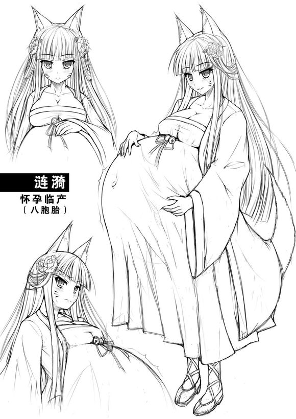
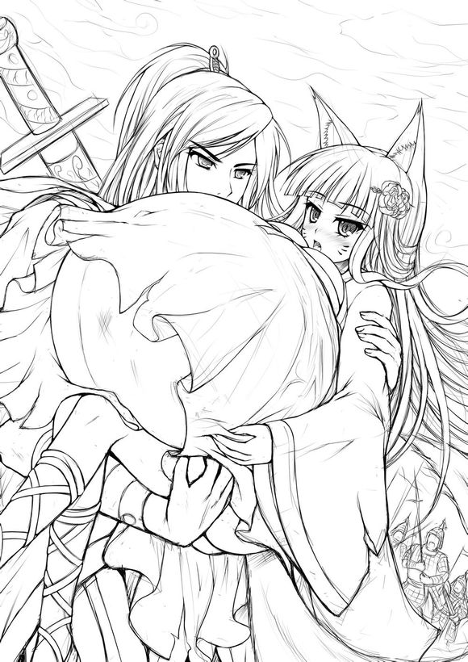
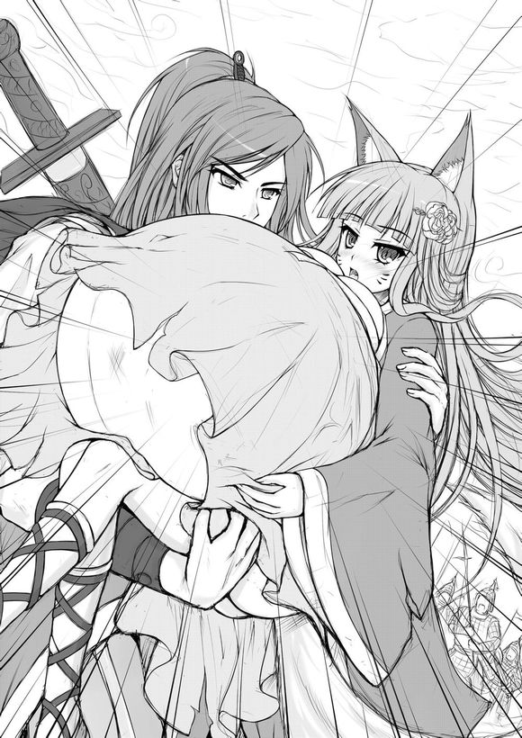
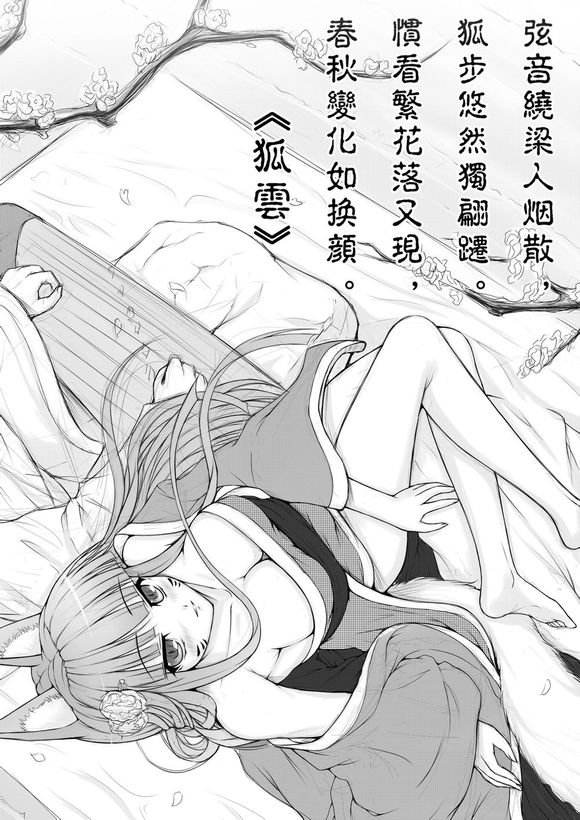
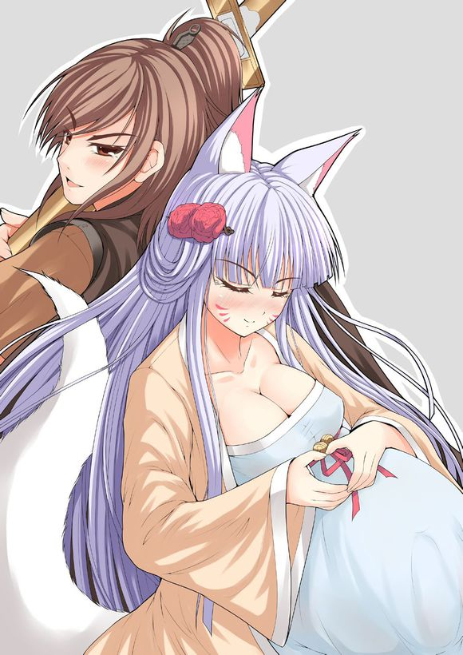
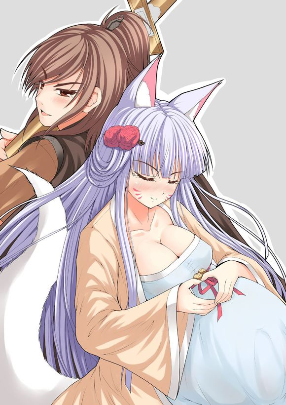
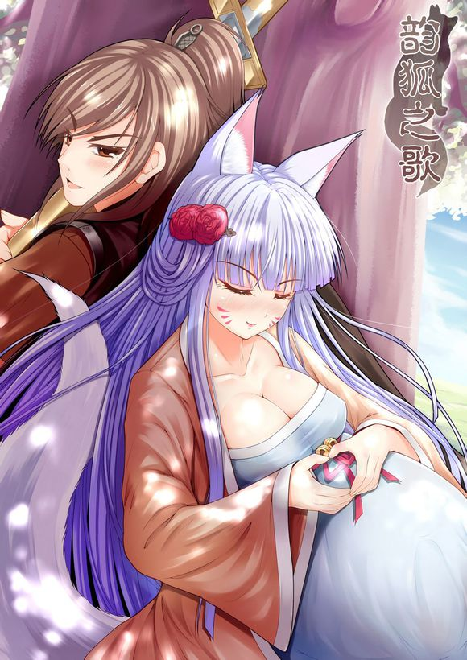

简介
剧情简介：
杀戮即是罪，但亦为救赎。欲望是恶，但亦为善……人时常会被某种力量吞噬，但每个人都期待被拯救。人心有时候能被轻易控制，但更多时候是自由而无法控制的。我们能理性的面对一切，但理性的边缘往往是悬崖……
……这是个“斩妖师”与妖狐的简单故事，也是场奇异的邂逅。原本要斩杀妖狐的“斩妖师”却发现这个绝色妖媚的妖狐怀着身孕。风逸俊冷的“斩妖师”从未被情色所动过，但此刻，他的刀却停留在了空中……“斩妖师”是否会因为这只特别的妖狐而背离他的天职？最后会是人净化妖还是妖吞噬人呢？
本故事纯属虚构。
主要人物介绍：

若水：“斩妖师”，有着精湛的剑术，燕国隐士田光之养子，虽然喜欢剑术，但无法容忍人间厮杀，所以成为了“斩妖师”。
涟漪：一只修行百年成精的小妖狐。虽已化为人形，但由于修行依然有限，所以还无法使用幻术影藏自己的狐狸尾巴和耳朵。
备注：
妖狐妊娠期：全程可为12个月，其中先期2个月胎儿为狐形，这也是狐狸的妊娠周期，若2个月选择降下胎儿，那产下的就仅是普通狐狸。而后10个月为人形态转化期，此期间想让胎儿成长则必须吞食人心以获得人类的灵气，如灵气不足就会强行分娩。胎儿能获得母亲多久的修行完全看2个月狐形态后的妊娠期长短。若能达到人类的10月怀胎周期则可完全获取母亲全部的修炼，且更青出于蓝，但由于狐狸一胎数量众多，所以越是后期，母体负担越是大，捕食维持灵气是一难题。
引文
公元前227年，世间仍分人、神、妖三道，而人间天下战乱，狼烟四起。秦国灭赵国后生灵涂炭，百姓民不聊生，紧接着又兵锋直指燕国。对于人类的战乱，神道者扼腕叹息，妖道者亢奋不已。原本人神共除妖的盛世被打破，被消灭殆尽的妖族又有了一线生机。
妖族开始四处觅食，吞食人心、人肝等内脏以增妖力，而神者已不再替人类除妖，人类唯独靠己除妖。于是，人间也衍生出了“斩妖师”的职业，众多厌倦战火的侠客、武林高手加入了这个职业。“斩妖师”均获得了神道的指点，每个“斩妖师”都法力高强，但他们的剑锋绝不可指向人类同族与神明，否则将会受到神明的惩罚……

公元前227年燕国境内，一只8人的小商队正在深邃而又荒无人迹的山林中小道中前行着，由于马匹、货物众多，商队前行缓慢……
“老大！让兄弟们歇会儿喝壶酒吧！兄弟们走又闷又累啊！”
“——我看啊！要是有个妞陪着就不累了！哈哈！”
“哈哈……”商人们一边走着一边调侃着。
正在这时，道路前方出现了一个人影，走近一看，原来是个衣衫褴褛的女子，戴着一顶草帽，并在轻声哭泣着。
“——女人？真的有个女的！”
“这深山野岭的怎么会有女子？一定是妖怪吧？”一名商人突然提醒道。
“——哇！这个女人的衣服下面是什么？”这时，另一名商人注意到了这名女子的腹部高高隆起。
女子边哭泣边蹒跚走向商队带头的一名商人，喃喃哀求道：“各位公子救救小女子啊！小女子被负心夫君抛弃在深山中，寻夫无门，求生无路啊！如今已有9个多月的身孕……”
但商人们很快发现这名女子肚子异常巨大，衣服也已经无法遮挡住她的肚皮，是就算是9个多月的身孕也不可能如此之大。女子表情一脸痛苦，双手捧着她那白皙的大肚皮，而肚皮下面好像有东西不断向外顶着，如果是胎动似乎太剧烈了些，且起伏不断……
女子呻吟了几声后，胎动有所减弱，商人们害怕地纷纷后退着，但此时，带头的商人注意到了这名女子的脸庞，虽有些脏，但依然有着沉鱼落雁之容，闭月羞花之貌，微风吹过，纤细的发丝绕过脸颊，雾鬓风鬟，令人不由心动。男子立刻停止了后退，并走向前去，用长袖擦去女子脸上的尘土……
“——老大！小心啊！这女子肯定是妖怪！”
尽管旁人提醒，但男子仍旁若无人地与女子寻话起来：“你这肚子里面到底是什么啊？你丈夫是谁？”
“公子有所不知，小女子夫君乃是南山仙人，而我怀的是他的八包胎……”女子告诉商人们，丈夫违背天条，和自己一凡间女子相爱，很快女子有了仙人的孩子，仙人通过灵力发现女子胎中有8个心跳声后更加高兴，待她如宝。然而很快，这名仙人被天庭发现并问罪，仙人为了保住自己的千年修行将女子抛弃在了荒山之中……
“原来她夫君是仙人啊！怪不得可以一发8个！”
“第一次见到8胞胎孕妇啊！怪怪！这8个孩子她能生得下来吗？听说双胞胎都比单个生起来困难啊！”
这时，队伍后面的商人开始窃窃私语起来：“——是啊！那么漂亮的姑娘以前身材一定很好啊！要不现在将就着玩了她？”
“我还是有点担心啊，她肚子那么大，玩到一半会不会爆出个妖怪？”
“——不会啦！人家那么漂亮，肯定是仙胎啦！我们还能粘粘仙气呢！”
“——对！大伙儿一块粘粘仙气！”
听到女子不是妖，且又看到商队的老大如此大胆，其他的商人们也纷纷走向前来。而商队老大也回头向其他商人们使了个眼色，并露出了一丝奸淫的笑容……
此刻在淡淡山雾中，一名玉树临风的持剑男子如风般疾驰着。
“——妖怪！看你往哪里跑！”男子边跑着边喊道，从他的黑色斗篷能看出此人为侠者。
原来最近商队遇袭事件不断，传言遇袭者几乎全部被掏空五脏六腑，周围村民、商人全部人心惶惶。官府派兵搜山无果，为了铲除妖孽，于是请来了位法力高强的“斩妖师”，而这位“斩妖师”传言已斩杀百个妖怪，被称为“百妖斩”，也经历了九死一生，从未退缩过，面对白骨妖魔幻化为貌美女子也毫不心动，毅然斩杀，故名扬天下。官府请他来可以说是百般放心，这次将斩杀第一百零一个对手，他正迫不及待地想尽快见到这位对手的真容。
“这妖气间参杂着狐骚味，这妖怪想必一定是狐妖！”斩妖师寻着妖气追向他的猎物……
“这娘们肚子那么大居然还那么骚！不但没拒绝，还让我们一个个慢慢的上！”
“是啊！还以为她会大喊救命呢！哈哈！”此时在深山中的商队已经停止前进了一个时辰。但8人的商人只有两个人在路边交谈着。
“快！再来一个！”山林远处又传来了商队老大的声音。
“就只有我们两个了！忍了那么久，就让我们一起来吧！”
“不行！一个个的！不能坏了规矩！”遭到老大反驳后，路边只剩下了一名商人了。
“——这新人小子让他多忍忍！我们继续……”
“啊啊……公子们慢点，小女子有身孕呢，这么激烈要坏掉了……”山林中不断传来其他商人的低喘声和女子的娇喘呻吟声……
“妖气越来越近了，应该就在前面了！”斩妖师加快脚步并且拔出了他的斩妖剑，斩妖剑在空中散发着冰冷的气息，并拖逸出一道淡淡的蓝光。这把斩妖剑也伴随着这位斩妖师斩杀了百妖，妖怪看到他的剑也会闻风丧胆。而他的必杀技则是用斩妖剑将妖怪进行腰斩，因为大部分的妖怪要害都不在头部，中间斩断是最致命的打击手段，但这不仅仅需要蛮力，更需要高超的剑术和从磨砺出的宝剑……
而在商队那边，这次等待的时间不是很久，很快山林中又传来了老大的声音：“那个新人！你也可以来了！赶快的！”
于是，最后那名商人边解着腰带边走向树林。虽然远处在有着老大等人的交谈声，但这名商人并没有看到任何人影，山雾变得更加浓了，商人开始有点害怕。
“嘻嘻！公子，来嘛！”突然商人感到身后有人轻轻抱住了他，商人猛然回头，身后正是方才那位女子正朝他笑着，且一丝不挂。由于肚子实在太大，女子只能侧身抱着商人，而她的大肚子里面好像又有什么东西蠕动着，一起一伏的，似乎在等待着什么……
“——等等，我还是想先去见一下老大，我有点不放心”见商人开始怀疑，于是女子带着商人往山林更深处走着。但很快，眼前的景象就让这名商人惊呆了。
——只见他的7位同伴一丝不挂地躺在地上且喉咙都被切开，切开处一边冒着血泡一边泛着蓝光。随着喉咙的震动，他们有的发出交谈声、有的发出低喘声，但实际上却早已失去了意识。
“妖……妖……”商人瞠目结舌，顿时脸色惨白，瘫倒在了地上……
“——看招！”蓝色流光划破山雾，斩妖师剑指妖魔，但很快他发现前面的猎物只是一只灰色的普通狐狸，而它的尾巴上燃着一点狐火。
斩妖师一剑斩断了灰狐的尾巴，顿时狐火熄灭，灰狐惨叫了一声后飞奔离去。原来这只是一只被附了妖术的普通狐狸，所以才会散发着妖气，而如果不斩断它的尾巴狐火会蔓延它全身，所以斩断它的尾巴则是救了它。
斩妖师狠狠捶了下地，他知道自己是被调虎离山了，而此时一定又有商人遇害了……
“哈哈！它们现在全都是我的了！哇~！有那么多漂亮的衣服啊！”转眼妖狐已经把商队的货物翻遍了，毕竟妖狐也是个妹子，破旧的衣服穿了那么旧早已经无法忍受了，见到货物中有人类女子的新衣服格外高兴，肆无忌惮地摘掉了帽子，精心把自己打扮了一番。
“哎呀！还是那么丑！呜——”让她遗憾的还是她那巨大的肚子，和漂亮的衣服怎么都不协调，即使落地长裙设计的服装，裙尾也被吊在了半空中……
忙完了打扮，妖狐来到了那8位商人的尸体边，这时她感到肚中胎动已经非常强烈，隔着衣衫都能清晰看到那不断起伏的剧烈胎动，再不补充灵力的话胎儿在她肚子里就要呆不下去了。于是妖狐赶紧用利爪抛开商人的胸膛开始享受起“美味大餐”……
“嗯咪啊~嗯咪啊……心太美味了，肝的味道也不错，太好吃了”妖狐露出了享受的表情，胎动也随之减弱了。
这时在远处的斩妖师闻到了血腥味，意识到一定是妖怪吃在人了，一切为时已晚。
“可恶的妖怪！我要把你碎尸万段！”斩妖师暂且收起宝剑，继续追风般向妖狐的方向疾驰……
“……啊……肚子好撑好撑，但是还想吃怎么办？嗯咪啊~嗯咪啊……停不下来，太好吃了。”此时的妖狐早已放松了警惕，一边享受着她的大餐一边喃喃自语着：“嗯咪啊~嗯咪啊……那么好吃的美味怎么能放弃呢？就算把肚皮撑破也要吃！谁叫我是吃货啊~太好吃了……太美味了！”
转眼间，地上的8具尸体已经全部被开膛破肚，妖狐吃了心以后又吃肝，吃了肝以后又吃内脏，从好吃的吃到口味一般的，吃得肚子又撑大了好几圈，这时，胎动又突然激烈了起来。
“啊啊……肚子……啊……胎动怎么又变得好激烈了……我的宝宝~你们太调皮了！”但面对美味的诱惑，这只吃货妖狐还是根本停不下来。
“——嗯咪啊~嗯咪啊……呃啊……怎么又乱动了……啊啊……妈妈的肚子要被你们弄坏掉了！”妖狐感到自己肚子涨得异常难受起来。她吃得太多了，已经超过人类男性食量的十几倍，此时她感到有些后悔了……
“……啊……怎么一次比一次动的激烈了？一定是吃的太多，肠子和胃把小宝宝们挤得太难受了。”妖狐对着肚子又自语起来：“哎！我的小宝宝们，你们就忍耐一下嘛。妈妈吃那么多也是为了你们啊！这些食物大部分还是给你们接下来一个月成长的啊！不管了~不管了~继续吃……”
比起肚子的难受，这只吃货妖狐还是无法放下眼前的美味，不一会儿，已经极限的肚子又被撑大了好几圈……
“嗯咪啊~嗯咪啊~啊啊啊啊……肚子……天哪~好痛……这次肚子真的要被撑破了……啊啊……”吃货妖狐这次深深后悔了起来，终于肚子痛到了难以忍受，她感到似乎肚子就要被撑破了，不得不发动妖力安定住了腹中的胎儿。
“呼……终于休停了！……求你们了！我的……我的小祖宗们……绕了我吧~呜呜……”吃货妖狐虽然不止一次这样吃得撑坏肚子，但这次真的被疼哭了，眼泪滑过了脸颊。
“——妖怪！拿命来！”没等妖狐缓过神，伴随着远处的吼声，散发着冰冷气息的斩妖剑径直向她刺来。
已经吃的无法动弹的妖狐来不及抹掉脸颊上的泪水，不得不用尽浑身解数躲开了斩妖剑的攻击，但随着一道回旋的蓝光，斩妖剑又再次指向了妖狐。妖狐感到肚子又涨又痛，再跳一下肚子就要破了，于是识到了自己这次难道厄运，终于放弃了抵抗，瘫倒在了地上……
“……啊啊……少侠，请放过我吧！呜呜……”妖狐在地上楚楚可怜地哭着哀求道：“求求你，少侠……就算……就算……要取我性命也请你放过我的孩子吧！呜……”
面对突然失去战斗力并在面前大哭的对手，斩妖师感到一阵手足无措，于是举着斩妖剑走向妖狐。走近后，斩妖师才发现原来这是个怀孕的妖狐。妖狐有着国色天香、倾国倾城的面容，但却顶着个异常巨大的肚子……
妖狐一边哀求一边娇喘呻吟着：“啊……肚子……肚子……怎么一下变得那么痛？求求你放过我的孩子……啊……我怀的是8胞胎啊……这8条小生命都是无辜的呀……我的孩子……啊……对不起！妈妈保护不了你们了~啊……痛死我了~呜……啊……肚子感觉要裂开了……他们好像要出来……啊啊……疼死我了……”
而此时，冷俊的除妖师却呆呆地愣在了一旁。妖狐见斩妖师有停止了攻击，感到似乎有了一线生机，至少应该会不忍心杀害她的孩子吧！于是一边哀求着一边试图开始分娩，此刻她的孩子已经在她的肚子里呆了11个多月了，虽然还差不到一个月就能修得他们母亲的全部功力，但是现在降生也已经能修得九成了……
“……啊啊……呜……少侠，求求您，放过……放过我的孩子！我保证什么都答应你……他们……他们……都会是善良可爱的……呃啊……啊啊啊…………肚子……”妖狐一边哀求着一边试图分娩，虽然妖狐用着力，但是由于刚吃完大餐，宝宝们在她肚子里互相缠绕并吸收着灵力，哪肯乖乖出来呢？妖狐也意识到自己分娩没有那么容易。
“……少侠！您肯答应照顾我的孩子吗？”妖狐望着斩妖师娇喘着问道，而泪水也不断从她那如盈盈秋水般的双眸中涌出……
“我可以答应你！待你完成分娩我可以把他们带到闾山交给我师父，让他们修炼成仙道。”斩妖师望着一旁商人的尸体冷冷地回答道：“但你的性命我必须取走！因为你残害了太多生灵！”
“……啊……我知道，但是我现在生不下来，我已经尽力了，但他们不肯出来！”妖狐继续娇喘着说道：“我吃人心也是为了让他们修成人形，但现在还尚需时日呢！如果少侠等不及的话就请剖开小女子的肚子带走这些孩子吧！我相信你会遵守诺言的！”说完，妖狐握住了斩妖师的剑并指向自己高高的肚子，而她白皙的手立刻被剑划破，流下鲜血。
“她只是想保护孩子，早已不顾自己的生死，就好像一个人类母亲不顾一切地保护自己的孩子。”斩妖师心中默默念道：“虽然妖、人殊途，但同样待子如宝，她杀害人类的目的也是为了腹中孩子的成长……而且她肚子里有那么多孩子，这一剑下去恐怕也会伤到他们吧？”想到这里，斩妖师紧紧握住了剑，没让剑向妖狐的腹部继续移动。他怎么看都觉得眼前只是个在保护着孩子的母亲……
“——啊？要我剖孕妇？那我不是和你们这些妖怪没什么区别了吗？再说这一剑下去伤到孩子怎么办？我不是还要食言？”面对楚楚可怜的妖狐，斩妖师终于还是收起了手中的斩妖剑。而妖狐也顿时松了口气，立刻擦掉了眼泪，接着又眯起眼睛伸了个懒腰、打了个哈欠，好似什么都没发生过一般……
“——兹日我们往闾山出发，待你何时产完孩儿本大侠何时就取你性命！若逃跑，本大侠当即取你及全部孩子性命！”斩妖师沉声说道。
“啊——！那我岂不是至少还能活一个月？”妖狐感到有些出乎意料，眯起眼睛心里默默念道：“刚吃了8个心！足够让宝宝们吸收一个多月了吧！如果我再用妖力还能再延产一下！现在是战乱，路上说不定能找到几具尸体吧？找机会再偷吃几个心估计能拖上两个月！然后想办法让这位少侠继续滋生怜悯之心！毕竟这里到闾山路途遥远，日久必生情！到时候运气好的话说不定他就不杀我了！好！就这样定了！一路慢慢走，延产！”不食人间烟火的妖狐似乎不懂得人类间的气氛问题，想着想着不一会儿又竟然露出了灿烂的笑容，令神情还凝重中的斩妖师一阵迷茫……
“多活几天有那么高兴？还是想跑？你这大腹便便的样子就算放你跑一个时辰也跑不远……”斩妖师暗自念道……
斩妖师和妖狐一起埋葬了8名商人的尸体并为他们祈福后踏上了前往闾山的道路。虽然又一下有8名商人遇害，但这一个案件也终于算画上了一个句号，现在他们不得不先绕道，将商人的货物运往镇上的官府，这对妖狐来说又是个好消息，因为拖着那么多货物绕道又要花上好几天时间。而每当斩妖师稍微有点加快脚步妖狐就喊着肚子难受、肚子痛，这样斩妖师又不得不放慢脚步……
“喂——少侠！你叫什么名字啊！介绍一下嘛！”妖狐想与斩妖师搭话。
“斩妖师——‘若水’！这名字说出去燕国无人不知！”斩妖师若水冷冷地回答道。
“小女子叫‘涟漪’！只是只修行百年的小妖狐！”妖狐涟漪晃动着脑袋上尖尖的耳朵眯起眼睛自我介绍道。
“我是你放过的第一个妖怪吗？”涟漪继续搭话道。
“是的。”
“因为我是大肚子吗？”
“是的。”
“我这样子很可笑吗？”
“是的。”若水还是冰冷而又机械地回答着。
“你这人真讨厌！那我现在这样子很丑吗？”涟漪似乎有些生气了。
若水沉默了……
“讨厌！和你说话真是自讨没趣！”涟漪鼓起了脸颊。
“也是呢，我只是个快死的大肚子丑狐妖，怎么有资格和大侠说话呢……”涟漪低下头喃喃念道，捧着大大的肚子在后面独自走着，也沉默了……
“但也很可爱。”若水突然回道。
“——啊？”涟漪耷拉下的耳朵一下子又尖尖竖了起来，这样的回答令涟漪出乎意料，若水的表情依然冷酷，但从他的性格看应该并不会敷衍着回答问题。这是涟漪大肚子以后第一次听到这样的评价。
“噗！”涟漪忍不住笑了出来……
但没等两人交谈几句，前方忽然出现了一大群人影挡住了去路。凭借若水的经验和警觉判断那些人都持有兵器，于是若水拖着涟漪躲进了一旁的丛林，暂时放弃了货物。
很快，那群人影跑近了过来，若水惊讶地发现这些人竟然是邻国秦国的士兵。若水万万没料到燕国国土上竟然会出现秦国士兵，因为那意味着秦国与燕国的全面战争已经爆发了，而这就是若水最最担心和不愿看到的事。两人的旅途也随之变得迷茫起来……
第二章预告 狐问之——“羞耻”是什么？
若水监视着秦军，推测秦军是采取纵深绕后战术，攻击燕国军队支援前线的辎重部队，于是决定赶去通报燕军……但刚离开躲藏的掩体，就被秦军一将领发现，秦军蜂拥而上。妖狐涟漪抱着巨大的肚子完全跑不动，很快就跌在地，涟漪感到一阵心慌和不知所措。这时若水突然抱起涟漪疾驰起来，涟漪感到非常意外，突然有了久违的心跳感。
涟漪的肚子实在太大了，直接贴住了若水的脸，若水忽然觉得此时的涟漪样子有趣，就像一个巨大的肉球……但若水立刻缓过神，告诫自己，他手中抱着的是一只罪孽深重的妖狐，脸前那个罪恶的圆滚滚大肚子里装了之前的8名商人内脏，和8个以后可能会吃人的妖怪，绝对不能被她迷惑了！而现在抱着她也只是无奈之举……
公元前227年，易水。秦王派王翦、辛胜出兵攻打燕国，燕、代两国发兵抵抗，虽然秦国兵力远超过燕、代两国军队，但燕国军队利用地势顽强抵抗。而在百里外，一支秦国军队早已偷偷潜入到了燕国纵深……
若水拖着涟漪躲到了树林间的一座土丘后监视着秦军。秦军士兵看到了商队的货物后安排了一批士兵展开搜索，其他士兵开始翻箱倒柜，并牵走马匹。士兵们只拿走了少许货物，若水推断这是秦军的一支纵深绕后部队，想要攻击燕国支援前线的辎重部队，于是打算通报燕军……
“我们现在要去找燕国军队通报秦军动向。”若水低声说道：“你若想耍花招我一定不顾一切先把你斩杀了！”
“怎么会呢？少侠答应能照顾涟漪的孩子涟漪就感激不尽了。”涟漪一边说着一边蹭了下若水的肩膀。
“——那是什么东西？快！围上去！”秦军士兵突然朝若水和涟漪的方向大喊了起来，接着大批秦军士兵立刻蜂拥而来。
原来虽然涟漪学着若水躲在土丘后面，但她耳朵还是竖得老高，远远就能看到两个晃动着的耳朵……
“——跑起来！我们被发现了！”若水拽着涟漪的手就快跑起来。
“哦——哦……啊呀……肚子……呃啊……啊……”涟漪一跑肚子就猛烈地晃动起来，她感到肚子里的孩子、食物和五脏六腑都一起搅动并向外甩着，似乎肚子就要甩破了。但涟漪更担心的是如被秦军士兵追上若水会先斩杀她。于是涟漪一边呻吟着一边依然努力跑着，但她跑得太慢了，秦军士兵离他们的距离迅速缩小着……
“——啊呀！”忽然，涟漪因为肚子的晃动而失去了平衡，一头倒在了地上，紧接着捂着肚子，痛得发不出声了。在疼痛中，涟漪更感到一阵心慌和不知所措，她担心若水的剑很快就会从背后刺来……
“……这也是我咎由自取吧！”涟漪默默念道：“之前太贪心，一下吃那么多。接着法力又都用在了安胎上，现在既没法力也爬不起来，这下死定了！我可怜的宝宝们啊……”
正在这时，涟漪感到背后有双强有力的手猛然将她整个身子抬了起来。扭头一看，正是若水，这是第一次有人把涟漪以这样的方式抱了起来。若水一脸凝重地抱着涟漪疾驰着，涟漪对这一切感到非常意外，突然有了少许久违的心跳感，而这感觉似曾相识，顿时她忘记了之前摔倒时的疼痛感……
“哦哦……哦……”刚才倒地时痛的发不出声的涟漪开始娇喘起来。涟漪的肚子实在太大了，直接贴住了若水的脸，并在他脸前晃动着，若水努力地探着头，但前面的路根本看不清晰。
“——哦哦……向左！……哦……——右面！哦哦……地上有石头！——跳！”涟漪见自己的肚子挡住了若水的视线，赶紧向他指挥起方向。后面的秦军士兵终于渐渐消失在了视野中……
若水终于松了口气，突然觉得此时的涟漪很趣且更可爱了，他感到自己好像抱着一个巨大的肉球，但这个肉球还会说话……
“——混蛋！我在想什么呢？我竟然觉得这只妖怪可爱？真是有辱师门！”但若水立刻缓过神，心中默默告诫自己：“我手中抱着的可是一只罪孽深重的妖狐！我脸前那个罪恶的圆滚滚大肚子里装了之前8名商人内脏！还有8个以后可能会吃人的小妖怪！绝对不能被她迷惑了！抱着她只是无奈之举……”
“——汝等何人？”远处传来喝声。
若水侧身探头望去，远处正是燕军向易水急行的一支辎重部队，携带着大量粮草及兵器，朝他们大喝的正是一名燕军将领。
“在下乃是闾山斩妖师——若水，正复尊师之命将此妖孽押往闾山！”若水水撒手放下涟漪并自我介绍道。
“小女子叫涟漪！是只修行——”
“——你就不用自我介绍了！”涟漪晃着耳朵想自我介绍，但被若水无情打断了。涟漪生气地鼓起了脸。
“久闻大侠大名！”燕军将领围着涟漪转了一圈以后说道：“此乃是妖孽啊？怪不得肚子那么大！汝等斩妖师现在还活捉妖怪啊？了不得！”
“——将军请速速绕道而行！”若水打断了燕军将领的话匆忙说道：“大批秦军士兵已向此方向驰来！若想货物安全送达易水必须绕道！”
“岂有此理！末将是奉燕太子丹之名将军火、粮草急速运往易水！”听到若水的话燕军将领大喝起来：“绕道要多行数日！耽误了行程弟兄们是要被杀头的！”
“——听在下一句！继续向前阁下恐怕永远也到不了易水了！”
“——不行！太子之命在身！继续前进！”
“报——！发现秦军部队！”正当两人还在争执，远处出现了秦军。燕军将领立刻拔刀准备决一死战。
很快，人数占绝对优势的秦军就展开了包围队形，将整支燕军辎重部队包围了起来，若水和涟漪也被围在了中间。同时，又有一支秦国的骑兵部队也驰援过来……
“真是匹夫之勇！”若水喃喃念道。
“——若你是燕国人就请和我们一同战斗！”燕军将领提出了令若水为难的要求：“我知道你们斩妖师不能杀人！但是你现在不杀人你我都要死！我们并肩战斗的话燕国就有希望！”
“抱歉，我不想、也不能杀人……”
“——那我现在就杀了你！”见若水回绝他的要求，燕军将领直接将剑挥向了若水。若水被迫拔剑抵挡，这时，秦军士兵也杀了上来，双方短兵相接，现场瞬间一片混乱，厮杀声、惨叫声、呼救声混做一团……
若水不断击飞双方士兵手中的剑、戈、盾，未击伤一人。但这样的作战方式消耗着他大量的体力。
“——末将秦军将领‘王贲’，敢问壮士何人？是否愿意投我大秦？”就在此时，一名横戈跃马的秦军将领在若水面前喝道。因为见若水没有穿着燕军战服，且武力高强、未斩杀双方一名士兵，所以想一探究竟。
“在下燕国斩妖师——若水！将军就是秦军三军统帅‘王翦’之子‘王贲’？”若水显得非常惊讶……
王翦是威正八方的秦军名将，而他的儿子王贲也是和他一起出征的一名秦军虎将，武力高强。若水久闻他大名，意识到自己更不可能从他手中突围了，但若水毅然还是选择不投秦军。王贲见若水拒不投降便杀上前来，刀光剑影如疾风暴雨一般在空气中回旋。但很快，由于若水的体力不支逐渐占下风……
“——若水！快上马！”正在此时，一旁的涟漪乘着两军交战的混乱中不知哪里找来了一匹战马。若水趁着过招间隙，立刻抱着涟漪跃身上马。
“——包围他们！”王贲战戈指向若水与涟漪，秦军剑盾兵抬起高大的盾牌围了上来，犹如一堵墙一般。
“我们快冲过去！我用法术击散他们！我已经恢复了不少法力了！”涟漪提议道。
“你又要攻击人类？”若水感到非常矛盾，但他别无选择……
若水与涟漪的坐骑前燃起了两段狐火，不断击散面前的士兵。面对眼前奇怪的狐火，秦军步兵纷纷害怕的后退。但王贲依然率领着他的骑兵部队追了上来，而载着两个人的战骑速度根本比不上秦军骑兵的速度，双方距离再次越来越近。
“左面是幽灵谷，用妖怪驱散他们！”涟漪提醒道。若水没时间多想，立刻将战马引入岔道。
“妖怪会攻击我们吗？”
“——会！”
“你不是也是妖怪吗？他们也攻击你？”
“因为我们入侵他们的底盘！但你可以斩杀他们！这是你长项！”涟漪摸着肚子回答道。但她的回答不无道理，于是若水又拔出散发着冰冷气息的斩妖剑，在妖气的吸引下，剑又泛出了蓝光。
很快，周围果真有各种大大小小的妖怪袭来，有空中飞行的，有地上蹿的，若水不断挥舞着他的斩妖刀，蓝色流光在空中回旋着。但后方的秦军骑兵也是虎狼之师，虽然被妖怪攻击有所损兵，但在王贲的带领下根本没有退却害怕的样子，也一路斩杀着妖魔。
“他们怎么那么厉害？……哦……前面要没路啦！哦哦……要到悬崖边啦！”涟漪提醒道。
“你怎么不早说？你的妖怪同类怎么那么弱？现在怎么办？”若水显得非常失望。果然不一会儿，前方出现了万丈深渊，战马停住了脚步。而深渊下笼罩着浓浓的山雾，加上天色已晚，已完全看不清山谷有多深了……
“要不我们就这么跳下去殉情吧？”涟漪眯起眼睛晃着耳朵说道。
“——谁要和你个妖怪殉情啊？再则我们何来的情？倒霉！今天还是要命断山崖了吗？”若水显得非常气愤。
“开个玩笑啦！可以跳下去，这个山谷多深我知道！”涟漪依然眯着眼睛又晃着尾巴说道：“相信我！最后一刻我会用狐火把我们托住。但是你一定要紧紧抱住我哦！”
望着越来越逼近的秦军士兵若水完全没有选择，他知道王贲不会放过知道了秦军动向的自己，于是闭上了眼睛，一边祈求着神明的保佑，一边紧紧抱住了涟漪，两人一同纵深跃下悬崖……
此时，虽秦军抽调了部分骑兵追击若水和涟漪，但数量依然占绝对优势的秦军还是轻松消灭了燕军的辎重部队，燕军全军覆灭。而在暮色低垂的悬崖边，王贲确认了两人跳下悬崖后，认为两人不可能生还，于是下令收兵……
“——我们怎么还掉得那么快？”若水紧紧抱着涟漪依然急速下坠着，若水越来越显得心慌和不安。这时，两人身旁又出现了两道狐火。
“——哦……哦……在减速！我已经用灵力帮我们减速了！……哦哦……我们好像太重了！着地靠你啦！”涟漪也在空中不安地喊道：“若水~若水！抱紧我！别把我摔坏了啊！”
“——你这狡猾的妖精！让我抱紧你原来为了保护你着地啊？下坠速度太快啦！”若水感到自己依然还是在重重的快速下坠着……
“——啊哟！”
“——呃啊！”
随着两声惨叫，两人重重地摔在了地上。而若水果然还是紧紧抱着涟漪，用自己的身子为她做了缓冲，虽然他调整了自己的真气护体，但还是摔得一时爬不起身了。
“……啊……啊……肚子！啊……痛痛痛……”尽管若水为涟漪做了缓冲，但着地冲击力依然很大，差点震破了涟漪的大肚皮，一阵剧烈的胎动又开始了……
……就这样，两个人在地上躺了很久很久。
涟漪首先缓缓坐起身，感觉肚子里的胎动已经减弱了很多，于是伸了个懒腰。见若水因为自己还躺在地上，便一边揉着肚皮一边答谢道：“谢谢少侠！救了小女子一命。”
“我……我算是半条命搭进去，你可别乘现在跑啊！”若水见涟漪坐起身，急忙一边摸着身边的剑一边威胁道：“你若……若现在跑，就算逃到天涯海角我也会找到并斩杀掉你！”
“嘻嘻！看你现在的样子！我先把你吃掉！”涟漪一边笑着一边又眯起眼睛说道。
“——你你！你这妖精……”若水一阵慌乱，努力地想坐起身，但很快就被涟漪轻轻按在了地上。
“——开个玩笑啦！涟漪虽然是妖怪，但还是懂得知恩图报的！”涟漪继续一边笑着一边晃着耳朵说道：“而且……而且……涟漪肚子里的小宝宝们还等着要少侠负责呢！”
“说得什么呢？怎么越说越不像话了？我只是好心答应将你的孩子送到闾山我师傅手中，能让他们修得仙道，不再危害人间……”若水心急地反驳道。
“好了好了！瞧少侠认真的样子！真没趣！”涟漪又故意鼓起脸装作生气地说道：“少侠就好好休息吧！天色已暗，夜晚在幽灵谷赶路定会迷路。待天明再赶路吧！”
“——本大侠就算睡着也能感知到周围灵气的变化，亦能快速拔剑！你可别耍花招！最好在原地不要动，我睡着的时候可是更加危险的！”若水一边威胁着一边把剑抱在了胸前，似乎准备随时拔剑。但很快，一天的疲劳就让他入睡了。
若水一直半梦半醒着，但他能感觉到涟漪的灵气非常平静，如同平静的水面一般。若水感到自己的心也随之渐渐平静下来……
暮色中，王贲率领着秦军在山林里埋伏着，远处的道路上出现了星星点点的火把。原来又一直燕军辎重部队在连夜向易水赶路。由于之前的部队全军覆灭，没人能通报到后续的部队，这支燕军部队毫不知情。借着夜色，秦军缓缓包围了燕军……
很快，这支燕军就大难临头了，大批秦军从路边夜色中杀了出来。王贲驾马冲在最前面，直接突入燕军，并用战戈横刃斩下了燕军将领的头颅。燕军士兵见状惊慌失措，乱作一团，很快丢盔弃甲开始逃跑，而秦军骑兵像在狩猎一般猎杀着正在逃跑的燕军。燕军见无法逃跑纷纷投降……
“一个活口也不要留下！我们是在敌后纵深，没能力带着俘虏行军！”王贲又下达了一个残酷的命令。紧接着，投降的燕军俘虏在哭喊中被一一斩下了头颅。
屠完俘虏，秦军开始检查缴获的物资，发现这次运输的是粮草和军服，于是在夺走了粮草后烧毁了剩余的物资，大火将夜色照的通亮……
“——什……什么时辰了啊？”清晨的阳光透过山雾照在若水的脸上，若水睁开了双眼，但依然迷糊。
“已经是辰时了哦！”涟漪静静坐在一旁边抚摸着她的大肚子边答道。好像一个晚上她都没挪动过位置。
“你就这样坐了一个晚上？”若水感到有些好奇。
“怎么会呢？晚上我舔了你的脸你都没察觉呢！”涟漪吐着舌头答道。
“不可能！别开玩笑！你们妖怪可以不用睡觉？”这次若水识破了涟漪的玩笑，一边追问着一边也坐起身来。
“我们妖狐只要睡两三个小时就可以啦！白天累了眯会儿眼。我们现在赶紧赶路吧！到夜里幽灵谷就不方便赶路了。”涟漪一边回答着一边捧着大肚子努力站起身来……
两人起身后匆忙赶路。虽然涟漪曾经来过幽灵谷，但是由于山谷地形过于复杂，如迷宫一般，所以也只能边猜边走……
不知不觉又到了卯时。幽灵谷的地形比两人想象中的都更加复杂，途中还不时遭到小妖怪的骚扰，进行的速度比预期的慢很多。由于周围悬崖众多，白天的时间很短，峡谷很快又被暮色笼罩，两人又不得不停止赶路……
……在幽灵谷的第三天，若水携带的水壶中的水和食物早已耗尽，并全身乏力，正当他想去喝一口水塘中的水时，涟漪阻止了他。原来这里毕竟是幽灵谷，这里所有的水和植物都是有妖毒的，人类喝了这水立刻会毒发身亡。若水把斩妖剑插入水中，斩妖剑立刻感受到了重重妖气，泛出强烈的蓝光。若水庆幸自己又捡了条命，但是又饿又脱水的他已经越来越接近身体极限了。若水羡慕起涟漪来，应为妖狐吃饱喝足后能撑得时间是人类的好几倍……
……幽灵谷的第四天，若水变得越来越消沉，尽管涟漪告诉若水他们已经接近幽灵谷出口了，但是若水的身体却到了极限，就算对付小妖怪也是非常吃力了。涟漪似乎也为若水操心起来，用妖力召唤出狐火帮若水驱散小妖。
“你……你若想逃跑，我斩……斩杀你还是有力气的！”若水依然逞强地说道……
……幽灵谷的第五天，若水行走的速度已经不及捧着大肚子的涟漪了，又饿又脱水的若水身体严重透支，已突破极限了。在奋力斩杀了一只来骚扰的小妖后，若水的身体开始摇摇晃晃……
“你……你若想逃……我……我斩……”没等若水把话说完就纵身倒在了地上，身体已经完全虚脱了。
“啊呀！怎么办？怎么办？”涟漪晃着耳朵焦急地望着若水。
尽管若水休息了许久，但严重脱水的他并没有一点好转。
“——水……水……”若水喃喃念道着。
“水——？哦——！有了！”涟漪想了想，突然拉下了自己的衣领。
“你……你干什么？”
“不是要水吗？”
“——胡闹！搞什么啊！”身体虚弱的若水在迷糊中看到了两座白皙的“双峰”，不由地跳了起来。
“我待产，奶水多着呢！喝吧喝吧！”涟漪眯起双眼半脱着衣服说道。
“你——你——这只骚狐狸！不知羞耻！”若水骂道。
“羞耻？羞耻是什么呀？看你救过我，我好心救你呢！”涟漪鼓起脸生气地说道。
“竟让我喝你的奶！这就是非常羞耻的行为！”
“那羞耻一下也没什么啊！你都快死了！”
“不喝！我一大丈夫，怎能和你这妖怪一样不知羞耻？”若水誓死回绝着涟漪。
“——羞耻是什么啦？我给你喝奶我羞耻！怎么你喝我的奶你也羞耻了？你这人太奇怪了！”涟漪耷拉下了耳朵说道。
“——羞耻就是枉为做人！你们这些吃人的妖怪怎么会懂？你们当然不知羞耻！”若水竭力吼道。
“妖怪吃人羞耻？那人类杀妖怪羞耻吗？人类杀人羞耻吗？之前那些互相厮杀的士兵羞耻吗？你把涟漪杀了羞耻吗？”涟漪竖起耳朵涨红着脸，撕破嗓门问道：“为什么你杀我不羞耻，喝我奶却是羞耻呢？”
这一连串的问题顿时令若水沉默并陷入了沉思中。是的，人类确实经常站在道德的高度做出很多不知羞耻的事情，一些枉为做人的行为时常被套上一个华丽的外表后甚至变成了高尚的行为，并借着正义、大义的口号杀戮、发动战争……
“……辜负你的好意了，真是抱歉！”若水望着涟漪轻声说道：“让我喝吧！我不想死在这里……”
说完，干渴难耐的若水紧紧抱住了涟漪……
“……哦……啊啊……哦……慢点……慢点啊……”涟漪娇喘着，脸上泛出红晕。若水不停地大口吸着。虽然奶水中掺杂着淡淡的狐骚味，并不好喝，但依然有沁人心脾的感觉。濒临死亡的若水感觉好像生命又慢慢流回了他体内……
“……啊啊……若水好羞耻！”涟漪眯起眼睛，现学现用的又开始拿若水开起玩笑。
“谢谢！你救了我！为了活下去，羞耻一回吧！”若水缓缓放开了涟漪说道。此时，他感到自己的精神恢复了不少。
“话说妖怪吃人是羞耻的行为呢以前也有人和我说过！”涟漪摇着尾巴说道。
“——哦？谁还会和你谈到这个问题？”若水疑惑地问道。
“他也没有和我解释清楚呢！不过他一身朔白衣冠，犹如仙人一般……”说着说着涟漪斜过了目光，脸上又泛起红晕。
“哦？那个人是谁啊？我也认识个人平时总是一身白衣呢！”若水好奇地追问道。
“讨厌！别套别人的话啦！”涟漪依然斜着目光不肯说下去，若水也没有再追问下去了……
若水恢复了体力后两人急忙继续赶路，终于在天黑前走出了幽灵谷。而不远处飘来着袅袅炊烟，若水期待着前面能有饭馆或者客栈能让他大吃大喝一顿。果不其然，前面真的是一家客栈，但客栈周围却荒无人烟，而他们走的也是条僻静之道。
“这里怎么会有客栈呢？难道是黑店？不管了！都快要饿死了！本大侠也不会怕山贼！”若水见天色已晚，心里掂量了一番以后决定进客栈。同时也卸下了自己的斗篷，将涟漪的耳朵包裹了起来……

“——啊……不要……好痛——啊啊啊……”涟漪惊惶地睁开双眼，发现自己已是伤痕累累，冰冷的铁链将她牢牢绑在一块卧倒的石碑上，石碑上画着各种符文，而周围到处是妖怪的残肢断臂，并伴随着阵阵尸臭。
“她又醒了！快快！烫哪里？”
“就烫那大的离奇的肚子吧！看她怕不怕高温！”一群术士打扮的男子将涟漪团团围着，其中一名男子手持铁烙棒朝着她走来。
“呜……不要啊！我要痛死的——啊！啊……”尽管涟漪苦苦求饶着，但滚烫的铁烙依然落在了她高高隆起的大肚子上。涟漪纤细的喉咙发出撕心裂肺地痛苦惨叫声，但换来的却是周围术士们的一阵狂笑声……
涟漪差点疼得又失去意识。此时，剧烈得胎动提醒着涟漪，如果这时胎儿降下的话，周围那些术师一定会毫不犹豫得杀害她的小宝宝们。涟漪继续用妖力安抚着她肚子里的宝宝们，顾不上用妖力回复自己身上的伤口。
“这妖怪什么都怕，而且不会回复伤口啊？”
“狐妖看来是很弱啊！好多妖怪被斩断手脚都能再长出来，她倒是伤回复的还没我们快！哈哈哈……”术士们一边狂笑一边议论着。
“——够了！快杀了他祭石碑吧！我们时间也不多了！”此时，一名豹头环眼般的高大男子走上前来喝道。而周围其他术士们都向他低下了头，想必这个人就是术士的首领。
“老大！这狐妖可是非常非常罕见的！我们也想多掌握些妖怪知识。”此时，一长相鼠目獐脑的术士弯着腰上前说道：“要不最后我们就在石碑上剖解开这只妖怪！窥其五脏六腑，以作探究如何？”
“——好，快点！”术士首领不耐烦地点头答应道。
“——啊……啊！不要！不管怎请……请放过我的孩子们！”涟漪一边呻吟一边苦苦哀求着。
“——不行！都要用来祭石碑！快剖！别浪费时间！”术士首领一口回绝了涟漪的哀求。
而此时，那名鼠目獐脑的术士迫不及待地掏出匕首顶向涟漪那肤如凝脂的大肚皮。
“——啊……别！救命啊！呜……若水！你在哪里？若水……别抛下我！若水……别抛下我啊……”涟漪的双眼黯然失色，但声嘶力竭地喊起了若水的名字……
……
“我要大吃大喝一顿！你喝不喝酒啊？”若水挠着后脑勺说道。
“——啊呜！喝！”涟漪眯起眼叫了一声后点头应道。
“咦？狐狸也喝酒？怎么学会的？”
“别人教得呗！”
“——还是那个白衣仙人？”若水对涟漪在幽灵谷说的那个白衣仙人越来越好奇，不断追问起来。但涟漪依然守口如瓶，并很快就变得愁云满面、耷拉下了耳朵。若水见涟漪如此不悦便没继续追问下去了……
两人刚进客栈，客栈小二就上前招呼起来。若水点了满满一桌酒菜，在用斩妖剑测试了没毒后两人立刻大吃大喝起来。但很快，小二就注意到了涟漪异常巨大的肚子和缠得高高的头布，神情有些失色。
“哦！她是异国人士，怀得是八胞胎！她生长的村子就是多胞胎村，最少也双胞胎……”若水匆忙解释道。
“那你们的关系是——？”小二好奇地追问道。
“——当然是夫妻啦！”涟漪靠在若水肩膀上答道，但这时她的头布却晃动了起来。原来晃耳朵已经成了涟漪的习惯，她不自觉地又晃起了耳朵。
“——这！”小二的神态又失色起来。
“哦！爱妻真乖！来摸摸头！”若水已无暇顾及涟漪自说自话的称呼，眼疾手快地将手移动到了涟漪的身后，并将手又缓缓从涟漪的脑后移入小二的视线中。涟漪也配合地眯起眼睛，露出一副满意的表情。小二终于恢复了神色，继续为两人上着酒菜……
而数十里外，在王贲的带领下，秦军取得了骄人的战绩，燕太子丹调遣的支援部队被击破，易水守军孤立无援。王翦见子战绩卓越，于是也身先士卒上阵杀敌，并一骑当千。面对威震八方的猛将亲自杀敌，燕、代两军无人敢应战，只得退入关内依靠城墙防御，士兵士气低弱、疲惫不堪……
“夫君好酒量……”
“夫人也是呢！不过少喝点啦！对孩子不好！”若水和涟漪已是喝得满脸通红，一边扮着夫妻一边不自觉得乐在其中……
“——来了只狐狸！”
“真的是狐狸啊！这太罕见了！”若水和涟漪喝得正酣时，客房方向一大伙人一边聊着一边走来。此时，大堂其他的客人也纷纷站起身来向若水和涟漪围了过来。
若水发现情况不妙打算拔剑，但很快身后有人把若水的剑又推入了剑鞘。顿时若水吓出了一身冷汗，虽然若水喝的有些醉，但不至于背后有人都察觉不到。所以，这个人的武功可谓深不可测。
“少侠，看你这打扮是斩妖师吧？”一个低沉的声音从后面传来，若水回头一看，背后是一名豹头环眼般的高大男子，那男子继续低沉地自我介绍道：“欢迎来到我们‘九霄御神教’，我就是教主——‘九霄真主’。”
“抱歉，在下没听说过这个教。在下乃是闾山斩妖师——若水，请问找我们有何贵干？”若水局促不安地反问道。
“没什么，只是想问少侠要走这只狐狸！此乃稀物！”高大男子一边说着一边一把扯掉了涟漪脑袋上的头布。
“——我不是狐狸！我是妖狐！”涟漪惶恐地晃着耳朵说道。
“哈哈哈哈！这只狐狸有点妖力了就说自己不是狐狸！”
“老远就闻到狐骚啦！还说不是！”这时，周围其他人一边议论一边大笑了起来，并嘲讽着涟漪。
“我不是……呜……”
“看这个——”
“——啊……啊……”这时一名男子将一张除妖符文贴在了涟漪的脑袋上，一阵强烈的头痛感向涟漪袭来，同时她感到自己的妖力也在被符文不断吸走。很快，涟漪就失去了知觉……
若水又一次拔出剑，这次那名高大男子并没有将若水的剑推回剑鞘，而是散发出了令人恐惧的灵力，周围其他人也纷纷拔出了剑。若水见形势对自己非常不利于是便先收回了剑。
“在下乃是复尊师之命将此妖孽押往闾山！我们闾山和贵教无怨无仇！请不要让在下为难……”尽管若水一再交涉，但高大男子和周围人带着涟漪头也不回地离开了大堂，若水快步追上，却被随从挡在了后面。大堂里只留下了若水和客栈小二。
若水给了小二大把的刀币，向小二打听起了这群人的消息，得知原来这些人都是些江湖术士，唯有那名自称“九霄真主”的来头谁也不知道，他们所谓的“九霄御神教”常年霸占着这家客栈并不断带来各种妖怪，刚入店的时候还搬来块巨大的石碑，店里的伙计都不敢询问这些人每天在干些什么。最奇怪的是客栈的地窖都被他们清空了，每天都有人把守，不准任何其他人下去……
小二知道的事情确实非常有限，现在若水感到最可疑的就是那个客栈的地窖了，那个所谓“九霄御神教”的秘密应该就在那里，而涟漪也很可能被关进了那里……
……
“他一身白装，衣袂飘飘，犹如仙人。他琴音如天籁，余音绕梁……”
一只独自穿越着寂静山林的妖狐被悠然清风般的弦音吸引。很快，她面前出现了一个一身朔白衣装的男子，他面如冠玉、儒雅端庄，心平如水地弹奏着，犹如仙人一般。
妖狐娇媚地走过，但白衣男子依然不为所动，依然弹奏着曲子……
“他不为我美色所动。但我希望他能一直陪伴在我身边。”于是妖狐使用了魅惑术，白衣男子终于将目光投向妖狐，妖狐嫣然一笑，秋波流媚。弦音停止了，男子缓缓站起身走向妖狐……
“——给我醒来！”一桶冰冷的脏水将涟漪从梦境中拽了回来，她发现自己的身体被铁链牢牢绑住，又冷又湿……
“呜……好难受！不要这么对待涟漪……”
“难受？难受的还在后头呢！”
“——你们想干什么？”涟漪环顾四周，周围尽是些各式各样的捕妖道具和刑具，一群术士打扮的男子将涟漪团团围着。
“先试试这个！”
“——啊……啊！好痛……”一名术士将一根根银针扎在了涟漪身上。涟漪痛苦地惨叫着。
“继续扎！记录下扎哪里她最疼！”一名长相鼠目獐脑的术士命令道。
“——啊……别扎肚子！别扎到小宝宝们！啊……啊……”尽管涟漪苦苦哀求，银针还是一根根的扎向了涟漪白皙的大肚皮上。伴随着剧烈的宫缩，涟漪感到银针穿过她的皮肤、肌肉、子宫壁、羊膜、针头一直扎到羊水中，逼近她的小宝宝们。涟漪用全部法力安定着胎儿，不让小宝宝们因为胎动而触碰到银针……
“——好了！现在拔掉银针，让血渗出，再往上面洒盐！记录洒到哪里她反映最敏感！”鼠目獐脑的术士又命令道。
伤口上撒盐也非常痛，但涟漪却反而安心了一些，尽管自己痛不欲生，但小宝宝们暂时安全了……
……涟漪撕心裂肺的痛苦喊叫声从地窖不断传出来，一直传到地窖外的若水耳中，现在可以确认涟漪一定就在地窖中了。若水心急如焚，他知道自己如果直接杀入地窖定是寡不敌众，且自己又不能伤人，何况还有个武力深不可测的“九霄真主”。若水无奈地望着窗外的夜空，随手拿过自己的水壶想喝口水，但自幽灵谷出来后他就一直没记得往水壶里加水，还是空空的。若水长叹了一口气……
此时，远处夜空中泛起淡淡红光，想必哪里又燃起了战火。若水又不自觉地回忆起了幽灵谷的点滴往事，想到和涟漪一起坠下悬崖、想到夜晚涟漪听话的坐在一边耐着寂寞的样子、想到涟漪不顾一切得救自己、想要涟漪总是会习惯地晃动耳朵、眯起眼睛的样子……
若水忧心如焚，捶着地板，但很快又拍打着自己的脸颊，努力让自己保持冷静，并竭力思考着计策。若水又不自觉地遥望着远处夜空中淡淡的火光，突然猛得跃身跳了起来，冲向客栈大堂。若水终于想到了一个计策，不管可不可行他都想尝试一下。
“……涟漪！坚持一下！要等我啊！”若水默默念道。
在大堂，若水问小二租了一匹最快的马匹，朝着远处的火光处疾驰而去……
“给我灌辣椒水！”鼠目獐脑的术士又下着命令，几名术士强行扒开了涟漪的樱桃小口，往里面灌起滚烫的辣椒水。顿时，涟漪的嘴巴也肿胀了起来，腹部也又越隆越高……
“——啊……啊！好辣……好烫……好撑……求求你们，快停下！呜……”在灌水的间隙时，涟漪苦苦哀求着：“涟漪喝不下了，肚子要撑破了……啊……肚子好痛、好涨……”
但是术士们依旧一碗接着一碗的灌，很快，涟漪就失节在了石碑上，水渍沿着石碑留下……
“够了！别灌了！这样会弄脏石碑！我要的是她的血！不是失节在石碑上！”这时，自称“九霄真主”男人上前喝斥道。
“——小的该死！不！这骚狐狸该死！竟然在神圣的石碑上失节！看我不教训你！”鼠目獐脑的术士拿起皮鞭走向涟漪。
“……什么……神圣……石碑，我看……我看就是块破石头！”涟漪虽然气若游丝，但依然回讽道。
“破石头？这石碑里可是封印了妖道中最强的上古兵器——斩神刀！”鼠目獐脑的术士急了起来，急忙说道：“看你在妖怪里长的还像个人样我就大发慈悲得告诉你！这刀是在一次妖神之战后落入人间的上古兵器。但神明无法触碰这斩神刀，于是将其封印在石碑中，嘱托燕王喜将石碑运往蓬莱封存。‘九霄真主’就是燕军负责护送石碑的将领，武功一流，于是和我们里应外合成功劫持了这石碑。而石碑沾染上妖血封印会弱化，为了获取这件上古兵器，我们就用妖血祭石碑。现在我们需要你的鲜血！”
“——废话什么？我要见血！”在“九霄真主”的喝斥下，术士开始猛烈的抽打涟漪，涟漪依然用尽全部法力保护着胎儿，没有一点多余的法力来安抚自己身上的伤口。很快，涟漪就因为剧烈的疼痛而失去了知觉，丝丝鲜血缓缓流到石碑上……
连夜急行数十里的若水果然发现了正在清理战场的秦军，冤家路窄的是将领正是王贲。王贲见若水竟然还活着，大为震惊，觉得若水一定不是个简单的人物。
若水见到王贲就好像见到救兵一般，心里默默念道：“真是天助我也！”
“——此人我定要取其首级！”年轻气盛的王贲大吼一声后立刻率大批骑兵展开追击，若水以单骑成功吸引了秦军……
秦军骑兵都穿着厚重盔甲，若水则为一轻骑，秦军自然追不上若水，但若水为了吸引秦军故意放慢了速度，让距离不断有所缩小，就这样，双方狂奔了几十里，若水成功把秦军引到了客栈，并直接骑马冲入了客栈大堂。
“小心有诈！”一名秦军骑兵向王贲提醒道。
“有诈？方圆百里的燕军全被我们击破了！还怕什么？再说本将军所向披靡！还从没遇到过尽兴的对手！”说完王贲也驾着坐骑冲入客栈大堂。
……在冲过后院回廊后，前面就是地窖口了，若水一边大喊着：“秦军来了，‘九霄真主’救命！”一边冲入了地窖。看守试图拦截若水，但看到后面大批秦军冲向他们时也纷纷逃入地窖。秦军也随之冲入了地窖。
……
“……若水……若水……你在哪里？若水……别抛下我！若水……”深邃的走廊尽头传来涟漪绝望而又声嘶力竭的呼喊声。
“——等我！再坚持一下……”若水一边默默念道一边追风般冲向走廊尽头……
很快，若水又见到了已浑身是伤、双眼黯然失色的涟漪。涟漪还在不住呼喊着若水的名字，而此时，鼠目獐脑的术士正将匕首顶着涟漪的大肚子。
“——秦军来了，‘九霄真主’救命！”若水假装自己和自称“九霄真主”的男人是一伙的，呼救着混入了术士中间。此时，一听秦军来了，所有的术士都放下了手中的活，拔出刀剑和秦军对峙起来，而若水借此机会跑到了涟漪身边……
涟漪听到了若水的声音立刻竖起了尖尖的耳朵。
“若水……若水……呜呜……”受尽委屈的涟漪见到若水梗咽得说不出话，于是嚎啕大哭了起来。
“……别怕！一切在我计划中，很快我们就会有机会逃跑。”若水在涟漪尖尖的耳朵旁小声说道，而涟漪也晃了晃耳朵，好像明白了若水的意思。
夜间行军的秦军个个手持着火把。但地窖空间封闭、空气不流畅，很快所有人就感觉呼吸不畅，但双方依然对峙着。
“——快熄灭火把！”九霄真主喝道。
“你敢命令我？还敢对我王贲大喝？哈——！不用灭火把！一闪念间我定取你项上人头离开这里！”王贲说完直接杀向“九霄真主”。
双方杀成一团，混乱中，火把点燃了周围的可燃物，顿时火光冲天，呼吸变得更加困难。不一会儿就有人因为呼吸困难而倒了下来，若水见状也假装呼吸困难倒在了地上。
“九霄真主”也开始感到呼吸困难，杀向地窖出口，王贲也感到一阵气虚，于是向地窖口且战且退，很快两人就从地窖内打到了地面上，其他人也纷纷跟了上来。而地窖内也已经火光冲天，若水因为一直趴在地上，所以只是感到有些气虚，于是拿出之前的空水壶大口吸了里面的空气，起身为涟漪解开锁链。但在石碑上的涟漪因为之前处在较高位置，吸入了不少烟气，已经有些休克了。
“涟漪！涟漪！醒醒啊！”若水焦急地拍打着涟漪的脸颊，但涟漪没有反应。
“涟漪一定是气虚过渡了！我还尚有一口气在口中……”若水心中念道。于是，若水托起涟漪，将自己口中的空气吐入了涟漪口中……很快，涟漪缓缓睁开了双眼，发现两人的脸第一次如此贴近，又一次有了久违的心跳感……
……若水抱起涟漪冲出了火海。在地窖外，术士和秦军已杀成了一团，没人注意到若水和涟漪正从地窖中出来。
“大侠！快带着她跑吧！”忽然，一个微弱的声音从地窖旁的暮色中传来，原来是客栈小二被若水的骁勇而感动，为若水牵来了马匹。若水答谢了小二后抱着涟漪骑上快马，沿着回廊奔出了客栈。
此时客栈外，天色已微亮，两人向山林中疾驰而去……
“若水……你救了我，没有抛下我……”伤痕累累的涟漪在若水怀中边揉着大肚子边喃喃说道，泪水不断涌出。
“你不是也救过我一命吗？当然应该以德相报！”若水又装出一脸冷俊回答道。
“若水……还有那石碑里面……有可怕的东西……”涟漪在若水怀中细声说道，提醒着若水石碑可能还是会落到术士或秦军手里。
“术士是只知其一不知其二。”若水气定神闲地告诉涟漪：“闾山早有记载这把刀，斩神刀之所以强是因为刀身饮了神者的血，不断饮食神者的血刀就会越来越强，而如果饮了妖者的血刀会越来越弱，之所以封印越来越弱正是因为斩神刀不断变弱了。如继续用妖者的血祭祀，那解开封印的那天他们拿到的也只是一把普通的刀而已……”
“若水……你真是足智多谋，让他们两群笨蛋打起来了……”涟漪在若水怀中又晃着耳朵说道。
“这是我恩师教我的‘鹬蚌相持，渔人得利’。”若水解释道：“战国时，赵且伐燕，苏代为燕谓惠王曰：“今者臣来，过易水，蚌方出曝而鹬啄其肉，蚌合而拑其喙。鹬曰：‘今日不雨，明日不雨，即有死蚌！’蚌亦谓鹬曰：‘今日不出，明日不出，即有死鹬！’两者不肯相舍。渔者得而并禽之。今赵且伐燕，燕赵久相支，以弊大众。臣恐强秦之为渔父也。故愿王熟计之也。”惠王曰：“善！”乃止……而这回，我也正是利用了秦军。”
说完，若水望了望涟漪，虽然眼角还挂着泪水，但涟漪早已在自己的怀里睡着了。
“你这小狐狸，和你说话就这么睡着了！到底有没有认真听啊？”若水气呼呼地说道。
“——等等，快停！这琴声……”忽然，涟漪竖起耳朵，惊醒了过来。
果然一阵似曾相识的淡淡弦乐声传入若水耳中，两人不由地随着乐声方向寻去。很快，远处山林间出现了一间小屋。小屋旁，一位白发苍苍的老翁正襟危坐在筑琴前演奏着。正当若水想向老翁寻话时……
“白发长老的琴声真是太好听了。”此时，涟漪却迫不及待地首先寻问道：“长老是否可曾听说过一位叫‘高渐离’的才子？”
“高……”若水顿时瞠目结舌，因为这正是他也想寻问的问题。
“老夫已经等候两位多时了……”老人点头说道。
“在下乃是闾山斩妖师若水……”
“——想必少侠就是燕国隐士田光之养子吧？少侠的父亲与高先生、还有老夫可都是挚友啊！”若水刚报出自己的名字老翁就提到了他养父的事情，这令若水非常吃惊。一旁的涟漪也惊讶地望着若水，原来若水之前提到的白衣人士也正是高先生。
老翁也自称“隐士”，称高渐离不久前住宿过老翁家中，得知挚友荆轲刺秦失败后，独自前往了秦国，并告诉了两人关于高先生的一些琐事……
“……涟漪姑娘，高先生临走前还提到过你，这把筑琴他让我转交给你。”老翁一边将身前的筑琴递给涟漪一边叹声念道：“希望你能原谅他的不辞而别，他心中装着的是燕国，他希望自己能替荆轲完成壮志。哎……壮士一去兮不复还。”
涟漪接过了琴，泪如秋雨。但当两人还想打听更多关于高渐离的事情时，老翁已显疲惫，并称已无可奉告。于是，两人与老翁短暂道别后继续启程赶路了。
……
“……他一身白装，衣袂飘飘，犹如仙人。他琴音如天籁，余音绕梁。他不为我美色所动。我希望他能一直陪伴在我身边。于是我魅惑了他，并与他云雨之欢。他爱上了我，为我弹琴、为我写诗。我身怀六甲，渐渐减少魅惑的法力，他依然爱我，告诉我他真心喜欢上了我。于是我不再使用魅惑术，不久他就离开了我……他欺骗了我！真心到底是什么？”涟漪在马上心中独自念道着，潸然泪下。
若水见涟漪如此难过便没继续搭话。但若水清楚，高先生十分珍爱这把琴，现在交到了涟漪手中一方面说明高先生确实也很珍爱涟漪，另外也说明了高先生这次确实打算魂断秦国了……
“——我们去救高先生吧？”
“——啊？”此时，涟漪却语出惊人地说出了她的提议，这令若水完全始料未及……
……在小屋前，老翁目送了两人后，一队燕军士兵走到了老翁身边向老翁汇报起战况。易水防线已经被攻破，老翁缓缓闭上了双眼……而这位老翁就是微服出巡的燕国国君——燕王喜。
 


……
山林间薄雾妖娆，朦胧中深邃静默。林中小道上，星罗般的马蹄印好似回忆着不久前秦燕两军在此交战的景象。最后燕军惨败，秦军的战线逐步吞噬着燕国大地，战火早已扫过易水、指向蓟城。微风伴随着土息拂过山林，重檐般的枝叶也随风摇曳起来，并沙沙作响，好似在为战死沙场的士兵们叹息着。伴随着轻风，远处传来阵轻盈的马蹄声，那正是若水和涟漪的坐骑，若水依然玉树临风般坐在马背上，怀中紧抱着涟漪……
“——我们去救高先生吧？”涟漪的话令若水完全始料未及，方才马背上的英姿飒爽霎那间荡然无存，开始埋头侧身地陷入了沉思……
“高先生乃是德高望重之辈，又是我父亲的挚友，我何不想立刻去救他。”若水沉默片刻后答道：“但且不说我师之命，你这即将临产之身连自己也照顾不了。之前在客栈多悬啊！到了秦国更是风云难测！”
“也是呢，涟漪已经给若水添了很多麻烦了，涟漪罪痕累累，若水暂且不杀涟漪就已经是天大的恩赐了……”涟漪说着说着眼泪又不住地流了下来。
而其实，若水的心中正在激烈搏斗着，毕竟涟漪救过他的命、共同经历了生死患难。涟漪眯起眼睛说话的样子，摇着尾巴撒娇的样子，高兴地晃着耳朵的样子在若水眼前历历在目，在他心中涟漪早就不再是妖怪了。
若水也猜到他敬仰的高先生其实还是爱着涟漪，可如果把涟漪送到闾山他师父手中的话涟漪必死无疑，面对杀害过人类的妖怪若水的师傅是绝不会有丝毫怜悯。而如果将涟漪送到高渐离身边的话或许能劝住他刺秦，若水清楚荆轲的剑术可谓是燕国数一数二的，但也刺秦失败了。秦王身边有着众多武艺高强的猛将，秦王自己的剑术也是闻名天下，根本不可能被任何人一剑封喉，所以高渐离刺秦只会白白送命，也无法替他的好友荆轲报仇……
“——吁！”想到这里，若水猛得扯住了马缰绳，并往回疾驰起来。
“诶——？”涟漪好奇地竖起耳朵并瞪大眼睛望着若水。
“于其带你去闾山赴死，还不如君子成人之美，将你送到高先生身边。”若水在涟漪竖起的尖尖耳朵边轻声说道：“涟漪如果在高先生身边也一定不会再伤害人类了。我独自回闾山向师傅请罪就好，这样你、或许还有高先生都能活下来！”
“若水……若水……”涟漪瞬间泪如倾盆，百感交集的她不断重复着若水的名字，无法用语言来表达自己的心情……
若水本应该取走涟漪的性命，但却还救了她以及她肚子里的孩子们。虽然他喜欢装作冷俊，但其实内心柔情似水，只是他的职业迫使着他挥动着手中的斩妖剑，涟漪心中的若水也早已不是一个要取她性命的斩妖师了。
“……你真是这世界上最蠢的斩妖师呢！”涟漪一边细语如蜜地责骂着，一边在若水的怀中闭上了双眼。涟漪对若水已充满了愧疚感，也不想让若水为自己负罪，但现在她却更想先救出高渐离，于是又静静地躺在了若水怀中……
数十里外，王贲率领的秦军骑兵部队成功镇压了“九霄御神教”，“九霄真主”最后败在了王贲的战戈下，负伤后向秦军投降。与此同时，易水之战秦军大捷的战报也传到了王贲耳中，但王贲却丝毫没有任何胜利的喜悦。
“——若水！又被你逃跑了！你莫非是在戏弄本将吧？”王贲紧握战戈愤怒地自语道：“竟敢戏弄本将！在这世上你还是第一人！若不将你碎尸万段本将就不叫王贲！”
此时的王贲已经完全被愤怒冲昏了头脑，决定不惜一切也要打探到若水的行踪，于是命令手下一支最精锐的部队全部卸下战甲，并布衣装扮、配上轻骑，全面追踪若水动向。
“一有消息立刻飞鸽传书给本将！不得有误！”王贲喝道。
“把一支精锐的作战部队变成斥候部队真的没问题吗？”此时，王贲的副将显得有些忧虑。
“大胆！你在怀疑本将？”王贲听后更加提高了嗓门大喝道：“本将一骑当千！我们不缺作战部队！但那戏弄本将的若水不除，你让本将如何名震天下？”
见王贲更加大怒，秦军士兵再也没人敢说一句话了……
“……若水……若水！”在疾驰的马背上，涟漪却忽然脸色惨白、呼吸急促。
“怎么了？不会是病了吧？”若水不安地询问道。
“胎动……胎动没有了！我的孩子们都不动了！”涟漪捂着肚子一脸惊恐地说道。
若水听后也惊慌起来，也摸着涟漪的肚子，果然过了很久也没有丝毫的胎动。若水立刻将少量真气注入涟漪的胎中，发现立刻被妖力吞没。
“——涟漪！马上收住你的妖气！不然你的孩子们要没命了！”若水立刻明白了原因，大声提醒着涟漪：“你之前在客栈负了那么重的伤，要是人类一定就早产了，但你却用妖力安抚住了胎儿，可这样的话你孩子们也会应为妖力影响变的越来越虚弱，过渡使用妖力对你的孩子们伤害太大了！”
“——那怎么办？怎么办？若水！救救我的孩子们！”涟漪望着若水急切地恳求着。
“你别慌张！先不要使用任何妖力了！我们还是回之前白发老翁住的小屋，我将用真气封住你的全部妖力，然后你安心养胎即可。你的孩子们不会有事的，只是需要在你肚子里多几天修养生息。”若水镇定地说道。
见若水如此镇定，涟漪的表情也舒缓了下来，但依然流露出了沮丧之情，因为她知道，自己这样是没办法去救高先生了……
穿过郁郁葱葱的丛林，涟漪和若水又回到了之前白发老翁隐居的小屋前，但白发老翁却已不见踪影。这位老翁正是微服出巡的燕国国君——燕王喜，在得知易水失守后便立马动身赶回蓟城，而若水和涟漪却浑然不知。若水在四处寻觅一番后决定暂且驻足于此，打算待老翁回来以后再向其细做解释。
在两人安顿之后，若水则开始运功为涟漪封妖力。两人对坐于屋边毡铺之上，只见若水努筋拔力，将自己的真气注入进涟漪的体内。蓝色的气流拨动起周围的落叶在两人身边回旋着，涟漪好奇而又俏皮地不时睁开一只眼睛，望着若水聚精会神的脸庞。
“——专心点！闭上眼睛！别浪费我功力！”若水嗔怒提醒道。涟漪吓得急忙闭上了眼睛，连身后尾巴都一动不动地僵直了。
……日光缓缓流向天边，转眼天空染成了绯色，林间小屋旁依然浮动着琉璃色的流光，那是若水耗费自己的修行所点燃的光芒，它们正缓缓流入涟漪的体内，将她失控的妖力归位。很快，涟漪感到逐渐神清气爽起来，而腹部也开始感受到阵阵胎动，涟漪的小宝宝们又恢复了生机。
蓝色流光渐渐开始消逝，若水已经殚精竭力。而运功已经达到了目的，于是若水收回了剩余的真气。
缓缓睁开双眼后，疲惫的若水顷刻躺倒在了草地上，累得一动也动不了……
“若水……若水……”涟漪凑到了若水的脸颊边不断呼唤着若水的名字。
“……吵死了！让我躺一会儿！累死了……”
“太好了！还活着！吓死我了”
“都被你吵死了！我不睁着眼睛吗？”
“死不瞑目更吓人啊！”
“——烦死啦！！让我休息一会儿啊！！”疲惫不堪的若水想静静躺一下，但被担心着他的涟漪吵得又无法安静休息，于是恼怒了起来。
涟漪见到若水又生气了，于是不再敢发声，也静静地躺在了若水身边……
天边最后一丝霞光也消逝在了夜色中，漫天星辰铺满整个天空，璀璨如钻，连绵如河。
“若水、若水！那条星光带就是银河吧？”涟漪按捺不住寂寞，又开始推攘着若水说道：“那两边有两颗特别亮的星星在遥遥相望，那就是‘牛郎’和‘织女’吧？”
“一定又是高先生教你的吧？”若水不耐烦地回道。
“嘿嘿……涟漪知道那只是个传说啦！不一定是真的，但是涟漪很喜欢听这些人类间的故事啦！”涟漪眯起眼睛，凑到若水耳朵边细声说道。
“哼！本大侠才疏学浅，传说、故事之类的可不知道多少，不像高先生无所不通。”若水自讽道。
“若大侠最厉害啦！又救了涟漪的小宝宝们！大英雄啊！涟漪能遇到若水真是太好了……”涟漪赶紧蹭着若水的肩膀甜甜夸赞着。
“你这只狡猾的小狐狸！什么时候嘴巴变得那么舔了？”若水故作冷淡地回道。
而其实，涟漪的娓娓细语声如甘甜泉水般早已倾入了若水心田，若水发现自己的疲倦都似乎被渐渐洗去……
而此时，攻破易水防线的秦军已经接管了数十里外燕国的武阳城，街巷中均升起了秦军战旗以示秦军驻扎。但秦军依然遭到零星抵抗，武阳附近更有数个武林、宗教门派，均不服秦军统治，隐匿在山林中伺机偷袭秦军，于是王翦命令王贲的部队暂且担任武阳城的戊卫工作，并清剿这些门派，而这正合王贲的心意。
若水和涟漪逃离客栈时没时间取得旅途补给，于是王贲的斥候部队到处打听着情报，附近的村落、山民都成了被盘问对象，尽管王贲开出了巨额的赏钱，但被盘问的村民、山民都称没见过秦军所描述的若水和涟漪两人。
“难道那两人还能凭空消失了不成？我倒要看看你们还能躲多久！”王贲趾高气扬地自语道。
山林中晨雾飘渺、天色微明，若水打算独自去林中狩猎。若水已猜到易水附近已全被秦军控制，而接触秦军很可能有危险，所以只能避开城市与村落，以狩猎为生。而事实上，若水的判断非常正确，就连山林的小道上也经常有秦军的巡察部队开过。
就这样，若水和涟漪过起了隐居的生活。若水出去狩猎时，涟漪按捺着寂寞，守着小屋、猜着若水能带回来些什么。当然，以若水的武功，狩猎可以说是件轻松的活，很快野猪、山鸡等野味就被带了回来。这是片资源丰富的山林，除了野生生物外还有野果，如果愿意，他还可以下到不远的小溪中去捕些鱼来。而涟漪似乎非常喜欢鱼，之前经过小溪边时，涟漪就目不转睛地盯着溪水中来回游动的鱼群……
“……啊！又吃撑啦！”晚上在篝火边，涟漪拍着大肚子又开始向若水撒娇。“若水、若水！今天小宝宝们又更加有精神了呢！你看，他们一直在动！若水，你来摸摸看。”说着涟漪把若水的手拉到了自己的大肚子上。
“不愧是妖狐的孩子，就是好动呢！”若水摸着涟漪不断起伏的大肚子感叹道。
“涟漪感到身子好重啊，这两天感觉完全走不动路啦！”说着涟漪就无力地蹭到了若水的肩膀上。
“那当然，我封住了你的妖力，你现在就和普通人类的女孩差不多，而你怀的的是8胞胎，人类女孩怀个8胞胎到临月的时候谁还走得了路？你还能走几步已经了不起啦！”若水解释道。
“呜……若水不要离开涟漪哦，涟漪走不了路的时候要照顾涟漪！”涟漪靠着若水的肩膀喃喃说道……
……时光荏苒，日复一日着，若水每天为涟漪狩猎、打水，现在涟漪每次起身也需要若水搀扶，而涟漪肚子涨得难受的时候若水也会替涟漪揉揉肚子。当涟漪出汗了以后若水也会用清水为她擦洗身子，虽然开始涟漪显得有些羞涩，但很快就习惯了被若水的照顾。而涟漪对若水的感激也在心中不断沉淀着，第一次有人这样照顾着涟漪……
涟漪捧着大肚子睡着后，若水时常独自跑到屋外仰着天，心中暗暗自问：“……我这是在做什么？接下来该怎么办呢？”
不久之后涟漪就将分娩，若水不得不思考，带着这8个孩子的他们俩该何去何从呢？
转眼涟漪的孕期已又过了一个多月，已走过了妖狐妊娠期的全程（12个月），到了涟漪将分娩的日子，一阵阵剧烈的宫缩开始了……
“哦哦……肚子……肚子……开始痛了……啊……”涟漪娇喘呻吟着：“……啊……啊……疼死我了……啊……”
“忍耐一下，现在我就帮你把妖力解开，你用妖力助生产。”若水清楚必须为涟漪解开妖穴，因为分娩足月的8胞胎对人类来说简直是九死一生。胎儿们不仅数量多，且都个头大，撑得过大的子宫缺乏韧性，或许也会无力将胎儿们挤出来，而脐带更可能互相缠绕导致难产，但如果借助妖力的话就能顺利分娩。
若水的身边又回旋起了蓝色的流光，将自己的真气再次注入涟漪体内。很快，涟漪已经可以用妖力了，但她却还是不愿用妖力缓解阵痛……
“……哦……哦……啊……好痛……为了孩子我要忍住……不能过多使用过多妖力……啊……”涟漪不断呻吟着，子宫口开始缓缓扩张，宫缩也开始越来越强烈起来，但离分娩还有很长一段时间，而涟漪打算能忍则忍，到最后一刻才使用妖力。
一旁的若水见到涟漪辛苦的样子不由感到敬畏，因为涟漪为了自己的孩子宁可自己多受痛苦，于是不自觉地握住了她的手，希望能让她有一份安心感。
一阵强烈的阵痛过后，宫缩又进入了平缓期，阵痛又减弱了，涟漪轻喘着……
“看你好累的样子，你是第一次分娩吗？”若水好奇地问道。
“是啊。”涟漪回道。
“诶——？竟然还是第一次。”
“——你什么意思啊？你以为我在外面到处随便和别人生孩子啊？”涟漪气急败坏地反问道，脸涨得通红、晃动的眼珠紧盯着若水，那委屈的样子更显楚楚可怜了……
但此时，若水忽然感觉到有数人朝小屋的方向走来，由于光顾着安抚涟漪，发现的时候已经太晚，对方已经推开了屋门……
“啊！带着妊娠妖狐的斩妖师？”
“是他们！找到了，拿下他们回去领赏！”三名王贲的斥候部队布衣士兵冲入了小屋。望着正在阵痛中的涟漪，若水知道他无路可退了，毅然拔出了斩妖剑，挡在了涟漪的前面。
冷艳的蓝光在空中跳跃、滑动着，若水试图打飞他们手中的剑，可对方毕竟是秦军的精锐部队，即使占下风也毫不退缩，战斗的非常顽强。
双方战斗数个回合，若水凭借精湛的剑术，在不伤害到对方的情况下打飞了2个人手中的武器，还有最后一名敌人残存有战斗力。但可能是若水先前帮涟漪打通妖穴时耗费了太多精力的关系，若水精神一个恍惚，剑直接刺中最后一名秦军士兵的肩膀，瞬间鲜血溅到了若水的身上、剑上。若水感到犹如自己被刺了一剑一样，浑身发烫、颤抖着身子向后退了几步。
“——身为斩妖师竟然出剑伤人！”
“看来是被妖狐魅惑了！我们走，禀报将军去！”两名秦军士兵搀扶着受伤的那名士兵离开了小屋……
若水感到自己的胸口隐隐作痛，靠在了墙壁上，手中斩妖剑的剑刃上散发着丝丝红光。
“若水……若水？你怎么了嘛？”涟漪费力地坐起身叫着若水的名字。
“怪我疏忽，一不小心伤到了人类，所以我修行的斩妖师内丹受到了损坏，但并不严重。”若水一边喘息着一边说道：“我们必须马上离开这里，这附近已经被秦军控制，他们很快就能搬到救兵，”
涟漪离正式分娩还有很长一段时间，若水的内丹调和恢复也需要时间，而下一刻，可能就会有秦军来到这里。于是若水不得不抱起了阵痛中的涟漪，跑出了屋外。涟漪也迎合着使用少许妖力来延缓宫缩，希望能先找到个安全的藏身之处……
若水抱着涟漪骑上马，向山林的深处跑去。一路上涟漪不断喘息着，而山路也越来越不好走，若水不断环顾着四周，盼望着能快点找到个合适的藏身之处。而正在这时，只听“扑腾”一声，若水感到自己身子骤然下沉，马匹忽然被一个大坑绊倒，若水和涟漪从马背上摔了下来，若水见势急忙抱紧涟漪回旋转身，再一次充当涟漪的人体缓冲，涟漪也及时发动了妖力减缓了两人落地的速度。
“——啊啊……痛痛……肚子……要裂开了……好痛……呜……”涟漪揉着大肚子，费力地坐起身，涟漪身下的若水用真气护体后看上去也并无大碍。
没等两人缓过神，一群身着黑衣的剑客就围了上来，这时两人才意识到刚才的坑是一个陷阱。
“呜……怎么还有埋伏？还让不让涟漪生啦？”涟漪哀叹道。
若水刚想起身拔剑，却发现这些剑客的铸剑并非是秦军的剑，而这些剑客看上去也并不像士兵。
“在下乃是闾山斩妖师若水……”若水自我介绍道。
“——原来你们也是燕国人？失礼了！我们也都是燕国人，狸山派……”站在最前面的黑衣剑客首领介绍道。
“——啊？狸山？”若水听后急忙插话道：“你们占山为王，把这里取名叫狸山，那一定崇拜狐狸的吧？这只妖狐要分娩了，要帮帮她吧！”
“什么啊！只是因为我们祖上都是狸城人而已！”剑客首领说道：“但做为燕国人，我们应该誓死抵抗秦军的入侵，如果你们愿意加入我们抗击秦军的话，我们就帮助她。”
若水和涟漪本来就正遭到秦军追击，而且丧失马匹，为了让涟漪先安全分娩，若水只能先答应了下来再做打算。于是狸山剑客们将若水和涟漪带回了他们山中的隐秘据点。
那是一个难以被发现的洞穴，洞口非常隐秘，长满茂密的植物，拨开轻巧设计的人工布景后才能进入洞穴。洞穴中空间开阔，有着天然天井这样的垂直通风口，也有着透过岩石的地下河暗流。如果食物储备充足，洞穴中足够可以将一阵支军队藏上好几天。若水首先找了块空旷的地方为涟漪铺开毡铺，让涟漪先休息起来。接着，若水在剑客们的带领下向洞穴深处走去，前去拜会狸山派的掌门人。
穿过幽深的洞穴，当若水走入掌门人所在的洞穴处时，顿时怵目惊心。洞穴周围环绕着浓厚的瘴气，地上躺着几具秦军士兵的尸体，而这些士兵都被挖掉了心。而端坐在宽敞石椅上的掌门人好似身心交病，一脸的惨白，瘴气正是从他身上散发出来的。若水立刻明白了，他一定吞噬过妖怪的内丹，并且已经妖术练得走火入魔了，失去了大部分人类的心志。
在洞穴的一旁角落，装着一排冰冷的铁栅栏，栅栏后面惶恐地站着几名双手被束缚的秦军士兵，他们的眼神中充满着难以想象的恐惧。而在他们其中，有一位白衫者泰然自若地安坐在墙角边，一副既来之则安之的心境。当若水上前时，他几乎无法相信自己的眼睛了……
“高先生……的味道？”涟漪休息片刻后，立刻嗅到了她熟悉的味道。作为妖狐，她对自己的嗅觉还是有着很强的自信的。涟漪呼唤了几声“高先生”，但没有回应。涟漪又呼唤了几声若水，但也没有任何回应。焦虑的涟漪无论如何也想去一探究竟。毕竟还没破水，涟漪感到自己勉强还能走动，于是又一次使用妖力延缓了宫缩。
“哦……好痛……小宝宝们，对不起……啊啊……”涟漪一边呻吟着，一边扶着岩壁向洞穴深处走去……
而那位白色衣衫者正是若水和涟漪要寻找的高先生，若水傻了眼，因此都没听到涟漪呼唤自己的名字。
“这个掌门人的心志已是九份妖了，我完全可以斩杀。但周围的剑客们却都是人类，我不能伤到他们！不管是什么情况我都要先救出高先生！”若水心中一边默默念道着，一边拔出了散发着蓝色光芒的斩妖剑……


那一身白衣衫，风度翩翩的身影如同曾经早就存在于涟漪的灵魂深处，她心中的冰霜开始被那个人的气息所融化。但要说高渐离是涟漪喜欢的类型的话，不如说他犹如唤醒了涟漪灵魂中的记忆一般。涟漪希望高先生能一直陪伴在她身边，而这份渴望就好似早就藏在了她的灵魂内……
“……高先生？”涟漪捧着阵痛中的大肚子，步履蹒跚地走向洞穴深处。“狸山派”所在洞穴是狭长结构的，任何通道都会汇聚到“中庭”位置，而那里就是狸山派掌门人所在的位置，涟漪扶着岩壁向中庭方向艰难地前行着……
此时在中庭，剑影四溅，洞穴岩壁上处处浮光掠影，剑客们犹磐石一般将若水团团围住。若水如鸿雁一般跃身而起，踏着岩壁先发制人的对狸山派掌门人进行攻击，尽管若水出剑如闪电一般快，攻击如狂风骤雨一般猛烈，但被狸山派掌门人甚至都没拔剑就轻松避开了若水的攻击。若水感到对方强大的妖力如泰山压顶，甚至令他呼吸都困难，深知双方战斗力相差悬殊。若水手中的斩妖剑也泛起红光，这预示着对方的妖力已经强到压制了斩妖剑上的灵力，斩妖剑已无法发挥全部功力。但既然剑已出鞘也已无法回头了，若水再次如飞鸟凌波般跃起，用剑滑过中庭一边的牢笼大门。随着“——啪”一声巨响，牢笼上的铁锁断裂了下来。若水急忙冲入牢笼为高渐离解开绳索。
“哦？看来你也想进去啊？”庭中御座上的掌门人终于开口说话了起来，但面容看起来昏昏欲睡。
“在下乃是闾山斩妖师——若水，不知掌门为何抓在下的恩师——高先生？”若水一边帮高渐离解开绳索一边质问着狸山派掌门人。但此时，高渐离却显得万般憔悴，一眼望去披头散发、目光游离。
“闾山斩妖师竟然有个秦军朋友？真是耐人寻味啊！”掌门人不徐不疾地摇头说道：“我们在为了正义消灭秦军，可你却身为一个燕国人对同胞出手？真令本座心痛啊！”
“你认错人了！我不是你要找的高先生！”此时，一旁的高渐离却装出根本不认识若水的样子回过身去，周围的秦军士兵也显得一面茫然。
“对啊，他之前告诉我自己叫李戬啊！你肯定认错了吧？”掌门人疑惑地反问道。
“——高渐离！”一声清脆而又坚定的从中庭洞口传来，而呼唤着高先生的正是涟漪。
“……涟漪？”高渐离不由自己地念出了涟漪的名字，他万万没想到自己会在这里遇见涟漪。高渐离的激动之情终于打破了最后一丝理性，迈开脚步走向涟漪……
“果然他还是高渐离啊？”
“高渐离不是荆轲的挚友吗？”
“李戬——渐离……”
高渐离的名字几乎无人不晓，不管是剑客还是秦军士兵都开始纷纷议论了起来……
“——高先生身在秦营心在燕国，希望大家能清楚这一点！”若水放声高呼道：“高先生乃是德高望重之辈，燕国的栋梁，他一心为燕国，也想为荆轲兄弟报仇！”
周围顿时一片喧闹，所有人都开始议论纷纷起来，若水也期盼着掌门人还存有一份人类的心志，能放过他和高渐离。
“涟漪？你可安好？你已经有身孕了？”高渐离急忙上前搀扶住步履艰难的涟漪，两人相隔一年后又一次依偎在了一起。
“他们可都是你的宝宝啊！当你不辞而别时，我已身怀六甲……”涟漪将高渐离因不辞而别给她带来的痛苦和怨恨全倾述给了他……
涟漪委屈的眼泪蹦涌而出，而这份委屈更是因为与高先生再次相遇后，感受到高先生依然还是爱着她。
“涟漪，对不起……对不起……”高渐离已感到任何言语都无法表达出愧疚之情，能做的只有不断地为涟漪擦抹着泪水，希望能擦抹掉她内心的痛处，哪怕只有一丝也好……
“……涟漪已临盆，希望掌门开恩，放了高先生，让他陪伴在涟漪身边。”一旁的若水也依然在苦苦求情。
“没想到高先生的爱人是狐妖啊……”掌门人思索片刻后说道：“那你们就加入我们狸山派吧！也请涟漪到后庭安心分娩，我妻子也会照顾她的。”
“——多谢掌门人开恩！”若水、涟漪、高渐离三人纷纷谢过掌门。事实上若水完全没想到掌门人这么容易就放过了他们三人，因为根据若水作为一个斩妖师的判断，掌门人的人类心志已经所剩无几。
“春兰！来招待下客人吧！”掌门人使唤道。
“知道啦，相公！”一嗓音轻柔甜美的女子出现在了掌门人身后，她肌肤白皙，眉目流沔，妩媚动人。但当若水注意到她腹部时却惊悸不安，女子的腹部不协调的高高隆起，她双手吃力地捧着异常巨大的肚子，也犹如6胞胎临月一般，而腹中隐约可见有异物起伏蠕动着，并一会儿发出“咕咕”声，一会儿发出“嘶嘶”声，怎么看都不像是人类的胎儿。
“——啊……啊……相公！春兰的肚子里面又暴乱起来了！帮妾揉揉啊……肚子……啊……肚子涨得好难受……”春兰依靠在了掌门的御座边，露出放浪的表情。掌门为她揉着肚子，但她腹中的异物却蠕动得越来越猛烈，并伴随着更加响亮的“咕咕”声，而这怪异刺耳的声响怎么都难以想象竟是从春兰肚子里传出来的。
“……啊啊……春兰的肚子……好痛……好痛……要被撑破了……”春兰不停地娇喘吟叫着，而掌门将她抱到了身上，不断地亲吻着她。不一会儿，春兰腹中的骚动开始渐渐平息，腹中的异响也轻了很多。
“看，帮你治好了吧？”掌门喜逐颜开地说道。
春兰缓过神后捧着大肚子徐徐站起身，走向若水一行三人。
“姑娘，恕我直言，你腹中的胎儿看起来太不正常了，怎么看都是妖胎！如果再让它生长下去你是凶多吉少！”若水直言不讳地说道。
“别胡说！我怀上的可是我相公的龙种，我相公可是拥有仙丹之人，是人中之龙！将来我们的孩子可是要和他父亲一起一统三界的哦！”春兰如同着了魔一般，一边轻抚着她那异动着的大肚子一边神情自若地说道：“请放心吧！随我到后庭来，涟漪姑娘可以在这里安心分娩。”
春兰将三人带进了后庭，而这个所谓的“后庭”其实就是狸山派掌门御座后面的洞穴，只有一条入口，所以他们其实依然是在被囚禁中。但在这里，涟漪可以安心分娩。
若水依然对春兰腹中的妖胎充满焦虑，但春兰毕竟看上去性情和善温柔，且只是个人类的弱女。因此虽然管她怀的是妖胎，但应该不会对若水、涟漪和高先生构成不利。而且或许正因为她，被妖孽侵蚀严重的掌门才存有一份人类的心志。于是若水也信任着春兰，并询问起她与她相公是如何相识的。高渐离则依然照顾着临盆中的涟漪。
春兰欣然向若水介绍起了她和狸山派掌门的相识经历，春兰显然是在掌门吞食了妖怪内丹后才与他相识的，她原本只是一个普通的青楼女子……
……一剑眉星眸的俊逸男子带着一群剑客刚踏进青楼，一群青楼女子就纷纷围上，她们个个柔情绰态，媚於语言。
“谁能与我共饮春露美酒不醉者，本公子将重金相赎，纳其为妻！”男子狂言道。
龟公们劝说男子不要信口雌黄，但男子却果真抛出了大把的刀币。龟公们收得钱财后便不再上前劝阻了。
对一普通青楼女子来说，能嫁到一个有钱的大户人家如同做梦一般，于是能喝酒的女子皆上前与男子共饮起来。很快，青楼女子们纷纷不胜酒量，有的呕吐、有的醉倒，但唯有春兰还是一直坚持到了最后。
男子大为赏识春兰，当夜在青楼中就迫不及待地与她云雨之欢起来。做欢时，春兰感到昏昏沉沉，腹中如翻江倒海一般，她从未有过这样的感觉……
“哦……哦……肚子里面好难受……啊……公子……春兰感觉身体好奇怪……”春兰娇喘了一阵后渐渐失去了知觉……
第二天，春兰醒来后就感到腹痛难忍，并且腹部微微隆起，顿时心慌起来。但男子悄悄告诉春兰，他是狸山派掌门人，吞食过神族的内丹，已为人中之龙，而他借助内丹之力，已让春兰怀上了龙种。
“……相公，请一定要对春兰负责，永远不要离开春兰。”春兰握住掌门的手娓娓说道，掌门默默地点了点头。而其实，从掌门踏入青楼并口出纳妻狂言时，春兰就为他的气魄所着迷，并深信着他……
若水为春兰叹惜，他完全清楚，春兰喜爱并深信的人早已失去心志，而那份爱和信任却让春兰在青楼一醉后一直没醒来。性情单纯的春兰怀上的是妖胎，可人类的身体是难以承受妖胎的，腹中妖孽的妖力越强则越难承受。可怜的春兰已是九死一生，能不能安全分娩也只有听天由命了……
“……高先生，请永远不要离开涟漪。”此刻，一旁的涟漪也正紧握着高渐离的手娓娓说道。若水明白，涟漪对高先生同样充满了爱与信任，当高先生离她而去时，一切似乎烟消云散。但当两人相逢时，涟漪又立刻拾起了这份爱与信任，就好似干柴欲火必燃一般。而这种痴心到傻的执着终于令若水无法控制住自己的眼泪，泪水淋湿了衣襟……
“能有一个愿意爱自己爱到傻的人相伴，那是多么幸福的事啊！怎么能忍心辜负她呢？”若水心中默默念道。
“……或许我才是妖怪中的恶魔吧！我竟然仍选择辜负一个愿意爱我爱到傻的姑娘。”高先生犹如听到若水的心语一般，边叹息着边心中默默念道：“我的世界中充满了国家、大义、天下、复仇……但在她的世界中，我却已经成为了她的全部。她的世界是单纯的，而我的世界是混沌的，刺秦就真的那么重要吗？”高渐离抚摸着涟漪纤柔的小手，刺秦的决心渐渐松动起来……
临盆的涟漪宫口已完全张开，宫缩不断增强着，可还是没有破水。涟漪痛苦地使着力，汗水淋湿了衣衫。
“——高先生！请你就为了涟漪放弃刺秦吧！”若水再也按捺不住自己，终于将心里话一吐而出。
“若水，你有着和你父亲一样善良的内心。”高渐离对若水说道：“你自小理性过人，而做为斩妖师的你却一直保护着涟漪，这令我非常感激。从这点也看出你和你父亲真的很像。你父亲田光也正是看不惯人世间的善恶恩怨才选择成为隐士。但我却和你父亲不一样，我已经背负上了无法放下的责任和命运，我的命已经不再属于我自己……”
高渐离又不由回忆起了在秦国的经历……
荆轲死了之后，燕太子丹和燕王喜一同恳求身为墨家第二高手的高渐离为荆轲报仇，并称只有他能拯救燕国。在燕太子丹的安排下，高渐离隐姓埋名为李戬，又在多名燕太子丹亲自委派的燕国内间帮助下，成功藏于宋子县一富人家中当帮佣，这位富人家由于认识众多达官显贵，所以燕太子丹希望高渐离能在此寻求机会。这家富人家的管家同为燕太子丹的亲信，协助着高渐离，但若高渐离身份被识破，这些内间们的性命也将不保，所以高渐离十分谨慎。
可高渐离自己也没想到机会来的如此之快，不久他家主人宴客，而那名客人正是秦国大将军——王翦。酒酣时王翦的儿子——王贲见大堂陈列着一展古筑琴，想击筑助兴，但王贲琴技拙劣，王翦叹息“佳琴无乐师”。高渐离听到筑乐，勾起了无限心思，同时也感到这是一个天赐良机，于是斗胆要求演奏一曲。王翦果然令高渐离表演一曲，高渐离全力舒展琴力，琴技震惊四座……
“……真是天籁绝调啊！”王翦情不自禁地起身拍手叫绝。
“将军过奖，鄙人不才，唯有琴技略有自信。”高渐离谦逊地回道。
于是高渐离抓住机会和王翦将军攀谈起来，称自己见过众多将士从战场下来后心理都受到严重创伤，这亦是心疾，而自己的乐声有安魂之效，且能为将士们鼓舞士气，所以希望为军中将士演奏，为大秦统一天下做出微薄之力。
王翦认为高渐离思想卓越、抱负远大，于是同意他留在自己身边。这样，高渐离一跃成为了军中乐师。高渐离希望尽快能为秦皇演奏，那时则是他的刺秦时机。事实上，高渐离在军中的琴技之绝已由将士口中传到了秦王耳中，他离刺秦计划只有一步之遥，高渐离也将这一切看做天意。谁知当高渐离在受王翦之命前往一处军营时却遭狸山派的埋伏，高渐离不敌狸山派掌门，被狸山派擒获，然而却又遇到了涟漪，或许这才是真正的命运安排……
“那……你如果……离开这里的话，还是……打算回去找秦军吗？”阵痛中的涟漪喘息着问道。
“我们的孩子都将出世了，我何不想放下一切，陪伴在你身边？但我背负着太多人的夙愿、嘱托、甚至是生命，刺杀秦王的任务只有我能完成，已然成为了我的宿命，你让我该怎么办呢？”高渐离心如刀绞，无奈地反问道。
“——问你自己！是我重要还是秦王重要？”涟漪淌着汗水，泪盈于睫，显得既痛苦又委屈。
在临盆中的涟漪已经肉体很痛苦了，高先生不想让涟漪心中更痛苦，但正当他含情脉脉地望着涟漪准备开口时，洞外却传来惊雷般的声响，打断了他们的对话。
随着“——轰……”一声音山崩地裂的巨响，岩石开始剧烈摇晃起来，接着中庭方向又传来岩石塌方的声音。
这时，涟漪腹部也传来“扑哧”一声，随即大量的水从涟漪的下面流了出来……
“——啊！涟漪破水了！一定是刚才剧烈震动的关系……”一旁的高先生慌乱了起来。
“——高先生，你别急，就在这里照顾好涟漪，我出去看看情况！”若水随即拿起斩妖剑冲向中庭……
中庭地动山摇，随着巨石的陨落，中庭的上方开出了一个如天门般的巨大天井，空气中扬起无数尘芥，耀眼的阳光洒落进幽暗的洞穴中，令人睁不开眼。
“发生什么了？地动吗？”
“——看！有什么东西从天上下来了！”空中出现一个身影，正从中庭坍塌处下入洞穴，而洞内的剑客们也纷纷骚动起来。
来自苍穹的身影缓缓下降到了洞穴中，所有的剑客都呆然而立。那是位飘逸着仙风道气的英俊年长男子，一身琉璃色的长袍背后绽开着一对朔白色的巨大羽翼。随着那对羽翼有力的摆动，洞穴中扬起阵阵旋风。
“——鹤仙师傅！”此时，从后庭跑来的若水立刻向这位长着羽翼的年长男子跪拜下来。而那位年长男子正是来自闾山的若水师傅。
“什么人如此放肆？胆敢毁我地宫！”原本又昏昏欲睡的狸山派掌门人从御座上拍案而起。
“本尊乃是闾山派掌门——鹤羽真人！”羽翼男子威严肃穆地自见道。
“——哦？你就是花了千年才由鹤修炼成仙，然后又花了千年才修为人形的鹤羽真人啊？”狸山派掌门人一脸不屑一顾地说道：“本掌门可是才花了几年就已修炼成一方之神的‘地界龙王’！”
“……哈哈哈！可笑之极！妖孽竟然自封龙王！”鹤羽真人大笑后怒道：“你混入我闾山，窃取我封印的魍魉内丹，如今你已失去人类心志。今天我不得不在你体内魍魉之魂苏醒前将你斩杀！”说完，鹤羽真人张开一只手掌，一道炽热的光芒出现在了他手心中，很快光芒舒展成了一把圣剑，并不断散发着耀眼的圣光。
“看今天是谁斩谁！见识下我黑龙斧的厉害吧！”狸山派掌门也不甘示弱地念起咒语，一道黑色的妖风随之呼啸而来，在他手中化作一把黑色的巨斧。
狸山派掌门手持巨斧，先发制人的发起攻击，鹤羽真人稳如泰山地站立在原地挥剑接招，剑斧之间发出震耳欲聋的碰击声，两人的妖气和仙气也在空中盘绕回旋着……
“呵！这就是魍魉之主的灵力？”鹤羽真人一边挥剑一边笑着嘲讽道：“就这点能耐？简直是渣！果然妖力和神力比起来就是烛火和太阳的差别啊！”
“黑龙斧才发挥了一层功力而已，我不想发挥它真正的功力，但你这样逼我，我也没有办法了……”话音刚落，狸山派掌门跃身飞起，将巨斧挥向一旁的秦军俘虏和剑客们，随着一阵惨叫声，顿时一旁血肉横飞、鲜血四溅。
“畜生！”若水怒火冲冠，拔剑冲向狸山派掌门，但却被一斧挡了回去，巨大的冲击力将若水一直推到墙上，若水即时真气护体才避免了负伤。
“若水，你先退下！他不是你现在能对付的对手！这妖孽已完全失去人类的心志了，如果体内的魍魉之魂苏醒的话为师都难敌！颛顼之子化作魍魉转世后妖力就在普通的妖族之上，当年是出动了一方所有神明，才共同将其剿灭，所以绝不能让它再苏醒了！”鹤羽真人一边向若水告诫道一边挥剑攻向狸山派掌门。
“——还不够！还不够！”狸山派掌门挥动着巨斧，轻松挡住了鹤羽真人的攻击，在攻击间隙，狸山派掌门继续挥斧砍杀着周围的剑客们。很快大部分剑客们都丧命于巨斧下，侥幸活下的仓皇逃出了洞穴，而狸山派掌门手中的黑斧变成了绯色，并散发着红光……
“哈哈哈！够了！够了！为了‘大义’，你们只能牺牲！我用妖力打造的黑龙斧也终于完成进化了！”狸山派掌门举起巨斧狂笑着说道。
“畜生也好意思谈‘大义’？”一旁的若水按捺不住满腔的愤怒说道。
“——滚！你懂什么？”狸山派掌门朝若水大吼道：“秦军生灵涂炭时，神明都不肯帮你们！而只有我，从秦军进攻燕国起就一直在斩杀秦军！只有我能拯救你们的燕国，最终一统三界！在我的统治下才会三界和平！”
“——哈哈！可笑！你连自己的心志都将丧失还想一统三界？”鹤羽真人又嘲讽道：“不管是人、神、妖谁都有野心，所以三界才不可能统一。就是因为你的野心，最后才葬送了你自己！”说完，鹤羽真人开始念起咒语，所有真气都被解放了出来，在他身边形成一道彩色光环……
狸山派掌门与鹤羽真人均展开了全部功力进行搏杀。黑龙斧虽然沉重，但在狸山派掌门的手里却变得轻如鸿毛。鹤羽真人剑速如流光，可还是都被挡了回来。很快，狸山派掌门开始占据上风。
“这就是你们神仙的战斗力？我用妖力就能挡住你剑气的攻击，但你吃我一斧就要完蛋！这么对拼下去可对你不利哦！”狸山派掌门洋洋得意地讥讽道。
很快，鹤羽真人剑速就开始缓缓变慢，真气流失殆尽。
“——师傅！你怎么了？”
“——退下！不要插手！”若水见师父快挡不住狸山派掌门的攻击，想出手相助，但鹤羽真人依然要若水不要插手。
“差不多是时候了！现在就给你致命一击吧！必杀技——‘黑龙缠日’！”狸山派掌门大喝一声后，使出了必杀技。顿时周围黑风四起，形成阵阵旋风，合流于黑龙斧之上，在狸山派掌门挥动巨斧的同时，旋风果真形成了一条黑色的巨龙冲向鹤羽真人……
“——师傅！”若水为师父而忧心，但却手足无措。
危急时候，鹤羽真人却从容不迫地扑动起双翼，顿时仙气四溢，鹤羽真人虽然可用于防御的真气耗尽，但却利用藏在羽翼中的神力在空中不断翻滚盘旋，躲避开了黑龙的攻击。很快，狸山派掌门的妖力就应为操控黑龙而消耗殆尽。
“没有妖力的你又怎么躲避我的必杀技呢？”鹤羽真人绰有余裕地说道：“必杀技——‘天予断魂，散九霄’！”鹤羽真人发动了剩余的神力，晴空中落下一道白色霹雳，缠绕在鹤羽真人的圣剑之上。随着他挥动圣剑，霹雳掺杂着神力扑向狸山派掌门……
“——啊啊……可恶！”随着一声触地号天的咆叫，狸山派掌门被电光击到了墙壁上，一时妖力散尽。
鹤羽真人见机果断挥剑，一剑刺入了狸山派掌门的胸膛，狸山掌门口吐黑血，手中的巨斧沉重地摔在了地上。鹤羽真人随即拔出剑，利用剩余的真气将魍魉内丹从狸山掌门的身体中引了出来，并封印进了自己的锁妖壶中……
“——师傅！太好了！你真厉害！”一旁的若水为鹤羽真人欢呼起来。
“魍魉之魂终于没能觉醒！幸哉！幸哉！”鹤羽真人也舒了口气。
“你怎么找到这里来的？”若水急问道。此时的若水却依然无法舒心，因为他根本无法预测鹤羽真人是否会放过涟漪。
“为师一直在寻找魍魉之主的内丹。”鹤羽真人解释道：“若水，你难道忘了你的斩妖剑正是为师所的附灵了吗？所以它有着妖力告知能力，当有超强妖力出现时候，为师就能感知到。”
“——相公！啊……相公！”此时，春兰姑娘忽然一脸失色、魂不附体地出现在了若水身后。而她那大肚子转眼间又变得更大了，已犹如8胞胎临月一般，而那异常的胎动和异响声也变得更为强烈了。春兰一手捧着异常巨大的肚子，一手扶着岩壁，痛苦呻吟着走向狸山派掌门。
“……爱妾，对不起……”残喘中的狸山派掌门也呼唤着春兰，似乎想做最后道别……
“——她是谁？这是怎么回事？——怎么回事？”但原本威严泰然的鹤羽真人却突然脸色大变。
“怎么了师傅？斩杀他也是无奈，不是为师的错啊！”若水一脸茫然，也跟着紧张起来。
“——不不！是魍魉……魍魉之魂！——怎么会是这样？”鹤羽真人不住地摇着头，面色从未有过地惊恐了起来……


“……啊……啊！不行……生不出来了……”分娩中的涟漪痛苦喘息着，她依然不愿使用妖力帮助生产，怕再次伤及孩子。虽然胎位已经完成下降，但被8胞胎撑得异常巨大的子宫缺乏韧性，很难将宝宝们挤入产道。
“涟漪，使劲，你能行的！我们的宝宝们马上就要出世了！再加把劲……”高先生紧紧握住涟漪的手，用白色的衣袂为涟漪擦拭着汗水和泪珠。
涟漪一次又一次地努力使着劲，终于第一个宝宝的胎头进了产道，宫缩促使着胎头向产道口缓慢移动，宝宝已迫不及待地想降临到这个世上了……
“……啊……肚子好痛……好胀……啊……要被撑破了……”此时在中庭，因为肚子膨胀而失去平衡的春兰瘫坐在了地上，她的肚子已胀到双手都捧不住了。而鹤羽真人却将剑指向了春兰……
“——别啊！师傅，请想办法救救春兰姑娘吧！她只是爱错了一个人，太可怜了！”若水向鹤羽真人下跪恳求道。
“——爱错人也是犯错！我们在战斗中犯下个小小的错误也可能会丢掉性命。犯错就要付出代价，代价过大也是天命！”鹤羽真人怒喝道：“因为狸山掌门吞噬了魍魉内丹并和春兰结合，魍魉内丹已分裂成两颗，而她腹中的妖胎才是魍魉的实体！”
“——你们……你们胡说……我们的宝宝……怎么……可能……是妖孽？”春兰用愤怒地眼神瞪着若水与鹤羽真人，眼泪掺杂着汗水不住地淌到地面上。
“师傅，再想想办法吧？对了，能不能用‘星移传送阵法’将春兰腹中的妖孽传移出来？”若水绞尽脑汁地想着办法。
但鹤羽真人依然将剑指着春兰摇头说道：“被传送者进行法力抵制的话是不可能传送成功的。春兰腹中的魍魉已成型并苏醒，它现在正窥视着我！我们唯有先发制人还尚有一丝获胜机会！”
“春……春兰……你怎么样？”狸山掌门用最后一口气奋力爬到春兰身边，并从背后紧紧抱住了她。
春兰痛苦地呻吟着，她张开腿做出分娩的姿势试图分娩，但胎位丝毫没有下降，且腹部依然在不断膨胀，并伴随着怪异的声响起伏着。面对痛苦挣扎的春兰，若水也心乱如麻，但手足无措……
“——对不起……春兰！你怀得可能确实是妖胎……魍魉内丹的事情是真的……”紧抱着春兰的狸山掌门却突然残喘着说道。
“哼！看来我取出了你的魍魉内丹后你恢复些人类神志，但一切都已经太晚！是你害死了她……”一旁的鹤羽真人说道。
但神色痛苦的春兰依然摇头说着：“……不……这不可能……这不可能……”
“春兰……你听我说……”狸山掌门人虽然失去了妖力，但用早期修为的一点真气一边努力延长着他的生命一边为春兰解释着：“曾经有个江湖浪人，因为一直空有抱负、心有余而力不足，所以一直在酒馆喝酒喝闷酒……”
……
有一天，江湖浪人呆望着人来人往的街道，独自喝着酒。当他转过头时，发现不知何时酒馆来了位眉目流沔，妩媚动人姑娘，也正独自一人坐在酒馆角落喝着酒，一杯又一杯……原来是喝着闷酒。
江湖浪人第一次看到那么能喝酒的姑娘，于是想上去搭讪。但这时，一群龟公们冲进酒馆，抓走了那个姑娘。原来那个姑娘是青楼女子，独自逃出来喝闷酒，想借酒消愁。从那以后，江湖浪人每天脑海中都会出现那位女子，而空有抱负的他无权无势，于是只能去努力的忘记她……
很快江湖浪人有了变强的机会，从一名在酒馆喝醉酒的斩妖师口中，他得知闾山封印有魍魉内丹，它能令人变得无比强大，但会渐渐失去心志。虽说没人知道多久后会失去心志，但江湖浪人觉得就算只有几天能让自己变得无人能敌也死而无憾了。因此，浪人想尽办法借钱收买守卫、勘察地形，终于成功偷取了魍魉内丹。
获得了魍魉内丹的浪人果然强大到了江湖上无人能敌的地步，在开始杀富济贫的同时，自己也获得了大量宝藏，很快又成立了“狸山派”，他也成为了“狸山派掌门”。而此时，他脑海里又浮现出了那天在酒馆中遇到的青楼女子……
“我现在有权有势了，已经不再是当年的江湖浪人了！”狸山派掌门心中念道：“我要娶我的心中佳人！我现在什么都有了！我能让她幸福！”想到这里，狸山派掌门就向青楼冲去，虽然他不知道那女子叫什么名字，但青楼中能有如此酒量的肯定非她莫属……
……狸山掌门泪流横面，开始渐渐失去意识，已无法再继续述说下去了。重新获得人类心志后的他悔恨不已，他没想到在和春兰云欢之时，魍魉内丹会分裂进入春兰的腹中，最终害了自己心爱的人……
……此刻在后庭，涟漪的产道口不断扩张。
“……看到宝宝了，看到宝宝的脑袋了！”高先生突然欢呼起来，经过了漫长的等待，一对尖尖的小耳朵终于露出了出来，但产道口依然没能扩张到胎头可以完全娩出的宽度，而其他的宝宝们也被堵在了宫口。
“……啊啊……好痛……下面要裂开了……啊……疼死我了……”涟漪痛得不由喊叫了起来，她感到一阵阵撕心裂肺的疼痛，一直疼到了发麻。
高先生的手一直紧紧握着涟漪，为她不住擦拭汗水和眼泪，并轻吻了她。虽然涟漪非常痛苦，但却充满了安心感……
“噢呜呜……太痛了，痛死涟漪了！怎么会这么疼啊……涟漪不生了，呜呜……”又是一阵撕裂般的疼痛从下面传来，疼得涟漪死去活来。
“涟漪好勇敢！就差一点点了，调下呼吸，再加把劲。那对小耳朵已经在外面晃动了呢！好可爱啊！会是男孩子还是女孩子呢？”高先生鼓励并拥抱住了涟漪。
“呜呜……”涟漪哭着咬紧牙齿，紧紧抱着高先生，生呼吸后开始使劲用力……
……狸山掌门已经闭上了双眼，双手紧紧从背后抱着春兰。
“……原来相公是在吞噬魍魉内丹前……在失去心志前就爱上春兰了啊？”春兰却意外地强忍着剧痛露出了一丝微笑，喘息着说道：“春兰……不过是个红颜薄命的春楼女子，能得到一份真爱就已经知足了……如果相公愿意……春兰希望……和相公来世再……续缘……”
春兰强忍着剧痛说完话后，拿起了地上一把阵亡剑客落下的长剑，突然向自己的腹部猛力地刺去……
“……啊啊——啊！”春兰痛苦地尖声惨叫着，长剑深深刺入了她的腹中。春兰肚子里瞬间剧烈翻腾起来，接着只听“啪”一身，春兰的肚子猛然爆裂了开来，伴随着横飞的鲜血和内脏，一个巨大的黑色物体嘶吼着腾空而出，身上刺着方才春兰手中的长剑，并挥洒着鲜血……飞散的血滴在空中飞舞着，一丝、一丝滑过若水的脸颊，与若水淌下的泪水交汇晕染在一起……
此刻，春兰已经闭上了双眼，失去了意识，而深爱着她的相公依然紧紧抱着她，也已失去了意识，两人依旧一前一后依偎相拥着……
“——啊……啊啊呜……啊啊呜……”在后庭传来阵阵啼哭声，涟漪的第一个宝宝出世了，高先生兴奋地抱起了他，那是个长着妖狐耳朵和尾巴的男婴。在用剑切断脐带后高先生将孩子送到了涟漪怀中……
“……好可爱！涟漪当妈妈啦！”虽然脸上还淌着泪水，但涟漪终于露出了灿烂的微笑。
“太好啦！我高渐离也为人父啦！”高先生也欢呼并拥抱着母子俩。
“——啊……啊……肚子又好痛……啊……”涟漪的肚子又痛了起来，原来第二个孩子也滑入了产道。
涟漪又开始使劲了，高先生也帮忙按着肚子。涟漪的肚子已变小了一些，不像之前那么僵硬了，产道和产道口也已经变得很柔软，第二个宝宝的出世要顺利得多，很快就已经到产道口了。
“扑哧”一声，伴随着飞溅而出的羊水，第二个宝宝的头部也娩出了。高先生急忙帮忙托住宝宝的脑袋，但此时，高渐离却惊呆了，第二个宝宝并没有妖狐耳朵，而是一个人类婴儿……
“……怎么会是人类的婴儿？妖狐也能产下人类婴儿？”高先生不解地问着涟漪。
“不知道啊……可能……是……高先生比较厉害吧……”涟漪羞红着脸说道。
“……还是个女孩子呢！太好了……太好了！看来涟漪也不是只一般的妖狐呢！快继续使劲啊！好想快点看到所有的宝宝们！”
“——嗯嗯！涟漪在努力使劲呢……”
虽然涟漪依然还很痛苦，但孩子们的相继出世也伴随着阵阵激动和喜悦……
“——轰轰……”魍魉的实体不断撞击着岩壁，发出阵阵巨响声，春兰的剑还牢牢插在它的背上……
“——妈妈！你用刀刺我！——妈妈！你竟然用刀刺我！呜呜呜……”魍魉实体发出嘶哑而又混沌的人类说话声。它身体长得犹如巨大猛兽一般，虎足、长尾、猪口牙，并且身子依然在不断膨胀变大。它脑袋细长，但却长了张人类的面容。
“魍魉！你竟然还敢降世祸害人间！”鹤羽真人将剑指向魍魉喝到。
“什么魍魉啊？我是梼杌……我是五帝之子——梼杌啊！这个世界怎么了？妈妈都要用剑刺我！”此时，魍魉却像个人类一样哭喊着，情形着实怪异。
“——梼杌已死，你已是妖孽转世，因妖力而记忆混沌，心志为魍魉心志，竟然借春兰之腹再次降世，并令春兰惨死，实在可恶！今天本尊就要替天行道！将你打的妖魂打碎！必杀技——‘天予断魂，散九霄’之奥义——‘魂飞魄散’！”鹤羽真人直接念起终极必杀技。
魍魉才刚出世，还处在混沌中，需要吸食周围的灵气，鹤羽真人希望趁魍魉还在混沌中时就将其击溃。
随着“霍嚓”一声，一道惊雷落在鹤羽真人的圣剑上，而此时，落雷并没有消失，形成一道长长的电脉。鹤羽真人撑开双翼，随即将圣剑指向魍魉，电脉也导向了它。
“——啊啊……”魍魉嘶吼了起来，而电脉环绕着它不断扩张，最后将它完全包裹吞噬……
“打中了！招数全中了！太好了！魍魉被干掉了吧？”若水迫不及待地欢呼起来，但鹤羽真人依然一脸凝重。
……随着鹤羽真人神力的消耗殆尽，电脉也渐渐消散，若水顿时瞠目结舌，魍魉纹丝不动地站在原地，而它的背后长出了一对巨大的黑色昆虫翅膀。
“可恶！太晚了吗？”鹤羽真人流露出了万般无奈的神情。
“妈妈用剑刺我！你们用雷劈我！这个世界太可恶了！我要杀光这个世界上所有的人！所有人都必须死！”魍魉开始咆哮着扑动起了双翼……
“再加把劲啊！怎么了？”
“……啊……不行，还是生不出来……”涟漪的第二个宝宝出产后，第三个宝宝却怎么也生不下来。涟漪不断用着力，汗如雨下，随着体力的下降，身子也不断颤抖起来。
“一定是被脐带缠住了，这是多胞胎生产过程中非常容易遇到的情况。涟漪用你的妖力将宝宝推出来吧！”高先生建议道。
“但这会伤到宝宝啊！”涟漪依然摇着脑袋不愿意。
“涟漪，你已经做得很好了，把妖力对宝宝的影响降到了最低，自己却仍受着难以忍受的痛苦。现在必须要使用妖力了，因为再这样下去你和宝宝们都会有危险。”高先生竭力得说服着涟漪，最后涟漪终于迟疑地点了点头……
涟漪的产道口泛出淡淡的蓝色光茫，在妖力的协助下，第三个宝宝终于出世了，是个长着尖尖耳朵的妖狐女婴。伴随着“扑扑”溢出的羊水，第四个宝宝也紧接着出世了，是个人类男婴，他果然被第三个宝宝的脐带缠住了，一起被拽了出来。高先生赶忙兴奋地切断了脐带。涟漪也热泪盈眶，急着立刻要抱抱他们……
“——嘣！——嘣！”随着两声响彻云霄的爆裂声，中庭洞穴的岩石又开始“轰隆隆”下坠……
鹤羽真人虽然又一次挥动羽翼躲避开了从魍魉翅膀中散发出的致命射线攻击，但却已显疲惫不堪，身边的神力光环已经减弱到若隐若现的状态，已经没有神力使用任何技能了，只能利用真气挥动手中的剑进行剑术攻击，但显然这样的攻击是毫无作用的。
“妈妈用剑刺我！你们用雷劈我！这个世界太可恶了……”魍魉诡异地在原地自言自语发起疯来，鹤羽真人得到了一丝喘息机会。
“——我来拖住它！师傅赶快去召唤一方神明共同讨伐魍魉吧！”若水提议。
“你拖不住它，魍魉已经比转世前强的多！我若一走，边上的武阳城就要遭殃，等一方神明赶到时，吞食了一城百姓的魍魉不知道会强到什么地步了。”鹤羽真人反驳道。
“难道就没有办法了吗？一物降一物，不是说任何事物都有命中克星吗？一定有降服它的办法吧？”若水急切问道。
“确实是有！”鹤羽真人回道：“魍魉的力量是来自于被附体之人内心，恶念使其变强。五帝之一颛顼之子——梼杌，性格拙劣，恶不可教，被妖孽蛊惑，吞食妖丹后化作魍魉，祸害一方。魍魉也有它的心魔，也是梼杌的心魔，他就是第一个斩杀魍魉之人，也成为了它的命中克星……”
“第一个斩杀魍魉之人？他是谁？现又在何处？”若水追问。
“三皇五帝时期，魍魉祸害人间，导致江河水泛滥，洪灾四起，而最后，它是被一心治水的大禹所斩杀。”
“大禹距离今1800年载，早已经不在人世啊！”
“但大禹可能已经转世！为师千年修为仙、千年修为人形，在世上已有2000余年了。1800年前，为师还只是一只有灵性的仙鹤时，记住了人间圣杰——大禹的灵魂气息，但时过境迁、相隔千秋后我并没把握确定我的记忆准确……”鹤羽真人仰天说道。
“——可恶的坏家伙们！你们必须死！”此时，魍魉跃身扑向了鹤羽真人，鹤羽真人扑动双翼躲开了魍魉的扑袭。
但此时，魍魉突然张口，“呼呼”地吐出阵阵妖火，由于距离过近，鹤羽真人被妖火所缠绕，尽管他利用真气护体，但还是被妖火所伤……
……随着“扑哧”一声，又一个小脑袋从涟漪的下面探了出来，已经是第七个宝宝了。而之前的第五、第六个分别是妖狐男婴和妖狐女婴，第七个宝宝很快也被拖了出来。
“……又是个人类女婴！真了不起！后面还有吗？”高先生按着涟漪的肚子问道，此时涟漪的肚子终于已变得很小了，并且软绵绵得，看不出里面还有没有宝宝。
“应该还有一个啊！我一直感受到的是8个宝宝的心跳呢！”涟漪开始担心了起来，应为宫缩的感觉已经非常淡，里面似乎没有了动静。
“会不会搞错了呢？”高先生怀疑起来。
“——啊啊……肚子又痛了……真调皮！竟然赖在妈妈肚子里……”涟漪的肚子里果然还有第八个宝宝……
……伴随着“啊啊呜……啊啊呜……”的啼哭声，最后一个宝宝也降生到了世上，也是个人类的男婴。
“涟漪真了不起，4男4女！4人类4妖狐！都是成双成对啊！”高先生满心欢喜地望着他们的小宝宝们。
“宝宝们可爱么？”涟漪脸上泛着红晕，望着高先生并晃动着耳朵问道。
“可爱！可爱！太可爱了！”高先生急忙回道。
“……涟漪好累……涟漪要休息一会儿了……”涟漪也耗尽了最后一丝体力，疲倦地昏睡了过去。但涟漪的身体还在自然地排着胎盘，于是高先生拽着脐带，将涟漪腹中的两个胎盘拖了出来，涟漪的分娩终于结束了，高先生也长长舒了口气……
“——师傅！”此时，若水再也按耐不住了，上前挥剑掩护鹤羽真人。但魍魉却转而向若水发起攻击。
魍魉挥动着巨大的昆虫翅膀，一道道死光扑向若水，若水竭力躲避着攻击，但没有神通力的若水体力消耗得非常快，身体变得越来越沉重。
“——快退下！别碍事！”鹤羽真人大喝道，但是为时已晚。魍魉的翅膀完全张开，散发出绿色的光芒，并发出“吱吱”的噪声……
伴随着一声轰雷巨响，成百上千条绿色光芒从魍魉的翅膀中绽放出来，在空中滑出道道流光并扑向若水。
“……诶？那是什么？”若水惊愕失色，感到一阵耳鸣，呆呆地站在原地望着那飞向自己的绚丽流光……
“——走！”忽然，若水感到一股强烈的真气猛然推开了自己。原来正是鹤羽真人，为了救若水，他闪到了若水身边，用真气推开了若水，又用自己的身体吸引着光束的攻击……
在一连串轰然爆破声后，鹤羽真人重重倒在了地上，而他那对朔白色的羽翼也已被光束扯断，鲜血染红了他的背部……
“……师傅！对不起！师傅……”若水扶起躺倒在地的鹤羽真人，后悔不已。要是魍魉用刚才的招数攻击鹤羽真人未必能打中，但是鹤羽真人为了保护若水，全部接下了魍魉的技能。
“——要死了吧？要死了吧？活该……活该……妈妈用剑刺我！你们用雷劈我！这个世界太可恶了……可恶了……”魍魉又开始在原地自言自语地发起疯来。
“你……快走……不是你的错……”鹤羽真人喃喃说道，他的头发开始渐渐变得花白。原来鹤羽真人的内丹已经被打碎，无力再保持千年不老的姿态。鹤羽真人清楚，一个2000多岁的老人也将很快会衰竭而死……
“——鹤羽真人？怎么会成这样？”忽然若水耳边传来高先生的声音，若水抬起了头，见高先生手上还有着血渍，急忙问道：“涟漪怎么样了？”
“漪生产顺利，一口气生了8个，现在太劳累，睡着了。”
“太好了！你快带涟漪和你们的宝宝们离开吧！我来拖住它！今天我们师徒二人在此作古！”若水将鹤羽真人扶到一边后将剑指向魍魉。
“——不不！鹤羽真人为了救你才这样的！你不能辜负他，你快带着涟漪和宝宝们走！”高先生一个劲地摇着头，怎么也不肯答应。
“——不！涟漪和你们的孩子们需要你！”
“你替我照顾他们！拜托了……我就算活下来也还会继续背负刺秦的宿命……”
若水和高先生两人互相推辞着，谁也不愿意离去。此时，魍魉的发狂也结束了，又冲向了高先生和若水。两人不得不一同拔剑指向魍魉……
“——你是谁？你你你你你你你是谁——？”突然，魍魉望着高先生驻足而立，精神失常得大吼了起来……
“果然是这样……”一旁已是白发苍苍、满脸皱纹的鹤羽真人显得非常激动，用沙哑的声音竭力说道：“高渐离！你就是魍魉的心魔啊！你与他灵魂相克！”
“——高先生……竟然是大禹转世？那我们有机会击败魍魉吗？”若水望着师傅，急切问道。
“……或许这就是命运的戏弄吧！”鹤羽真人叹息着说道：“魍魉藏匿于春兰腹中时，已经完成了转世后的进化，并吸取了大量灵气。魍魉已经过于强大，虽然高先生与它灵魂相克，但毕竟是人间修为，两者实力相距甚远，不足以发挥灵魂相克的作用……可惜为师的内丹已碎裂，无法将千年的修为传递给他了！哎……人间修是无法发挥灵魂相克之效的……”
“——涟漪有百年修为，愿意给高先生一试……”忽然，中庭洞口传来涟漪纤细的嗓音声。高先生猛然回首，正是涟漪。原来在发现高先生离开后，涟漪立刻也跟了出来……
“——不——不！绝对不行……涟漪！你快走，这里危险！”高先生竭力反对着。
“嗒嗒嗒嗒嗒嗒……”忽然，魍魉那边又传来奇怪的声音，四人向魍魉处望去，只见魍魉极速膨胀着，快顶到岩洞顶了，而它的背部又长出了一堆翅膀……
“……还有一个办法”鹤羽真人望着魍魉寒心消志，拿出了之前装有魍魉分裂内丹的锁妖壶……
“——师傅！你这是要干什么？”若水慌乱地叫了起来。
“若水……魍魉在不断进化变异下一步会变成什么样？妖力会达到什么地步？为师也不知道。”鹤羽真人喘息着说道：“武阳城距此不过几十里，下一刻或许它就会感受到城内百姓们的气息，那时武阳城将血流成河！——为了拯救苍生，老夫恳求高渐离先生吞食妖丹，与魍魉玉石俱焚……”
听了鹤羽真人的话，所有人都震惊沉默了。而鹤羽真人奋力起身，双手持锁妖壶，跪在了高渐离身前……

“——鹤羽真人尊长快快请起来！高某受不得尊长行如此大礼！既然是高某的命数，高某定照办！”说罢高渐离赶忙搀扶起鹤羽真人。
“不……师傅，不可以！高先生不能死啊！”
“——只有这样才能击败魍魉！不然我们这里所有人都得死，武阳城的百姓也难以幸免！”
尽管若水竭力反对，但鹤羽真人还是将锁妖壶递给了高先生。
高先生含笑接过了锁妖壶，拍了拍若水的肩膀后说道：“看来今天命中注定，由我高某在此作古。但是高某也有个乞求，希望鹤羽真人尊长能答应。”
“但说无妨。”鹤羽真人应道。
“高某唯一的乞求便是请鹤羽尊长宽恕涟漪曾经的一切罪过。”高先生央求道。
“但她曾残害无辜路人，掏心夺命，触犯了天地之法，恐怕……”鹤羽真人显得有些为难。
“——她的一切罪过是由我弃她而去所引起，请全部算在我高某身上！”高先生遽然“噗通”下跪在了鹤羽真人身前。
“既然高先生有此番心愿，本尊答应便是……”面对高先生的诚恳和魍魉的威胁，鹤羽真人果真答应了高先生的恳求，而高先生也泰然地打开了锁妖壶。
“……高先生！”可涟漪依然不折不饶地冲向高先生，试图阻止他吞食魍魉内丹。
突然，只听“嗖嗖”两声，两道死光骤然飞向涟漪。刚完成分娩的涟漪还没有了体力和妖力，只能呆呆地望着飞向自己的死光……
“——涟漪！小心！”若水猛然跃身而起，竭力扑倒了涟漪。伴随着轰然巨响，光束在若水和涟漪身边爆炸，千钧一发。
望着险些丧命的涟漪，高渐离毫不犹豫地吞下了锁妖壶中的魍魉内丹。陡然间，他感到一股强烈的瘴气充入了他的血液，那是股窒息般的寒冷，仿佛血液要被冻结了一般，这股寒流冲入他的心脏，伴随着“嗵、嗵”的心跳，寒流又迅速蔓延至他的全身，渗透进了每一丝血管中……
“……我要报仇，是他杀了我！他如今就在我面前！”高渐离脑海中响起了沙哑的说话声。他意识到那时魍魉的心声，分裂的魍魉内丹和魍魉的灵魂产生着共鸣，魍魉的思绪和记忆涌现在了高先生的脑海中……
……
“——鲧、禹父子听令！中原地带洪水泛滥，村田被淹、粮食歉收、殍尸遍野，百姓受尽苦难，本帝命你们即刻动身，前去治理水灾。如遇妖孽作祟，定要斩妖除魔……”大殿上，尧、舜二帝命夏禹父子前去治水。而高先生仿佛身临其境般，正跪在帝王面前，而他看到的正是整整1800年前，夏禹眼中所看到景象……
……那是三皇五帝时期，当时由于人界弱小，神界并未重视人界，世间主要是妖神间的战斗。此时，五帝之一颛顼之子——梼杌却效力于妖族，将妖孽引向人间，并在获得强大妖力后在黄河流域作怪，导致黄河泛滥，夏禹受命于尧、舜二帝之命前去治水。
夏禹治水时遇到梼杌的阻挠，但夏禹不但治水有方，还英勇善战，于是梼杌想俘获夏禹为己所用。夏禹将计就计，假借降斩杀了刚化为妖孽不久的梼杌，成为人间斩杀妖族的第一人。
夏禹虽然在治水与除妖上取得巨大成功，但对女色毫无贪恋，三十未娶妻，任何貌美如花的姑娘都没令他回眸。可夏禹毕竟年事已高，恐时暮失嗣，于是在经过一神庙时拜神求姻缘。拜过神庙没多久，夏禹就在山路中遇到一持鹤仙者，手持仙鹤的神者见夏禹便唱道：“绥绥白狐，九尾庞庞。成于家室，我都攸昌。”
“白狐？还是九尾？妖怪吗？和‘成于家室’风马牛不相及啊！什么和什么啊？”夏禹一脸茫然。
“此乃‘涂山歌’，此歌便是你的姻缘所属，时机一到你自然明白。”说完，仙人便消失离去……
不久，夏禹在途经涂山时，果真见到了貌似九尾狐的图腾，随着图腾方向前行，夏禹寻觅到了涂山部落。在此，夏禹终于遇到了涂山氏的女儿——女娇，正如仙者所云，她长着九条庞庞的白色狐狸尾巴，柔美而又飘逸。女娇一见到夏禹就眯着眼睛晃动起她那尖尖的狐狸耳朵，毫无疑问，她正如涂山歌中所唱，为白狐化身，且容貌倾国倾城，千娇百媚……
“……这是……涟漪？涟漪是女娇转世？”此刻，一股来自灵魂深处的相识感晕染到了高先生的脑海中……
“——女娇父亲乃是掌管一方神明的天狐！”持鹤仙者再次出现在了夏禹身旁，对夏禹殷切说道：“尔乃是天狐所唯一敬重的人类，天狐愿意将自己的爱女——女娇许配于你，此乃天命，未来你们的孩儿将在此立夏王朝……”
就这样，夏禹取了秀美娴雅的九尾狐仙——女娇为妻。不久之后，女娇就有了身孕。而夏禹也一直守护在女娇身边，一直到她生产。但他们在一起的幸福时光却并没多久了……
女娇怀胎一年后为夏禹产下了一男婴，由于夏王朝创始之命在身，便取名为“夏启”。
但这时，对夏禹深恶痛绝的梼杌在仇恨中化作了魍魉转世，并又找到了夏禹。夏禹为保护孩子和刚完成分娩的女娇与魍魉殊展开死搏斗，但是转世后的魍魉妖力增倍。最后，当持鹤仙者赶来支援时，夏禹已与魍魉同归于尽。而持鹤仙者手中的仙鹤则正是1800年前的鹤羽真人，他目睹了一切，也为夏禹的英雄气概所动容……
虽然魍魉的魂魄和内丹被一同被封印在闾山无法转世，但夏禹也离开了女娇。女娇伤心欲绝，持鹤仙者转告女娇这亦是天命，希望她一心抚养夏启，以建立夏王朝。可女娇却一心只想念夏禹……
深爱着夏禹的女娇无法控制自己对夏禹的思念，做为狐仙的她于是使用了神界禁用的法术——招魂术，将夏禹还魂。女娇的举动违抗了天命，破坏了阴阳平衡，激起了众神愤怒。按照天法，女娇被众神废掉了修行了千年的狐仙内丹，在被贬为妖孽后处决。而夏禹更是悲痛欲绝……
被贬为妖孽的女娇千年转世后仅仅成为了一只最为普通的白色灵狐。在一次神妖之战中，各种法术穿梭其间，误入战场的她却从法术间意外获得了比其它灵狐更多的天地灵气，随着她苦心修炼，百年后终于修成了具有妖术的妖狐，并又一次修成了人形……
……高先生回忆起了刚见到涟漪时的感觉，确实有着似曾相识感，要不是怀着刺秦重任，高先生觉得自己或许会对涟漪一见钟情，但这就是命运，现在一切已晚……
“……好冷……好冷……这就是魍魉内丹的力量吗？我那么快就要失去心志了吗？好困啊……”高先生的意识开始渐渐模糊了……
忽然，一股暖流从高先生的口中奔涌而入，如同春的气息一般，吹散了他血液中的酷寒冰霜。炙热的鲜血再次奔入了高先生的心房……
“……那是什么？”高先生的意识又恢复起来，随着视线的渐渐清晰，他发现涟漪的脸正与自己贴的如此之近……
——不是接触到了，涟漪正亲吻并拥抱着高先生。那温和而又充满生机的气息，正通过涟漪柔嫩的嘴唇流入高先生的口中……
“——你在干什么？”恢复意识的高先生一把推开了涟漪。
“你的灵气都被魍魉内丹吸走了呢，这样可以将涟漪的灵力传达给你呀！”涟漪一脸委屈地解释道。
“——这样魍魉的瘴气也会进入你体内啊！”高先生责备着涟漪。
“所以我也看到魍魉的记忆了哦！”涟漪晃着耳朵得意地回道。
此刻，高先生再也无法按捺住自己的感情了，一把紧紧抱住了涟漪，前世的惋惜都化作了此时此刻对涟漪的爱，可这股爱又和今生的遗憾与愧疚交织在一起，百感交集，让他欲语先泪流，血泪盈襟……
魍魉又一次张开了翅膀，发出了“吱吱吱吱”的噪声。之前，由于高先生意外连接了魍魉思绪而导致它行动被干扰。但现在，魍魉阻断了与复制内丹的思绪联系，行动又恢复了正常。
高先生感觉有一股力量充斥着自己的血液，他希望保护身后的涟漪，因而尝试伸手发动妖力，果然面前出现了一道妖气屏障。随着“砰砰”巨响，魍魉翅膀中放射出来的光束全被屏障吸收了进去……
借魍魉喘息之机，高先生急速来到狸山掌门身边，拾起了地上的黑龙斧。因为内丹作用，高先生感到似乎自己能控制这把武器。果不其然，黑龙斧在高先生手中发生了变化，笨重的斧形态开始渐渐变小，并显现出匀称的双刃，最终黑龙斧竟化作了黑龙剑，剑身黑龙图腾缠绕。
“果然是用灵力打造的武器，看来它是认我这个主人了！”高先生一边心中念道，一边释放着妖力，强烈的妖气回旋并膨胀着……
“必杀技——黑龙缠日！”随着高先生挥动手中的黑龙剑，狸山掌门的终极招数在高先生手中轻松释放了出来，黑色的翔龙猛然扑向魍魉……
“——哇哇！好痛！好痛啊……”被黑龙缠绕的魍魉大声悲鸣着……
“——何等强大的妖力啊！”若水发出惊叹。
“……虽然高先生轻松释放了‘黑龙缠日’，但毕竟他手中的黑龙斧已化作黑龙剑，威力不如从前。”鹤羽真人解释道：“就好比挥剑比挥斧轻松得多一样的道理，但因为灵魂相克，魍魉的妖力在高先生面前被弱化了，所以现在的攻击对它一定有效！”
……黑龙渐渐散去，只见魍魉的两对翅膀已经被削去。
“太好了！我也去协助高先生吧？”
“可以，魍魉的妖力已被高先生的妖怪力压制！你们现在联手一定能赢！”
在鹤羽真人的指示下，若水也挥剑冲向了魍魉。已恢复了一些体力和妖力的涟漪也召唤了狐火，支援着若水和高先生的攻击。
“……你曾为我自废千年修行，这次该轮到我守护你了！”高先生一边说道，一边将涟漪挡在了身后，自己冲向魍魉……
但是，正当高先生冲到魍魉面前时，魍魉竟然顷刻间完全消失了。
“诶？怎么会……”
“——那是妖力触发的潜行术！它应该就在你周围！”
在鹤羽真人的提示下，高先生又继续开始挥舞着手中的黑龙剑。妖力传导向地面，划出一道道弧线，并触发起阵阵气流在空气中“嗡嗡”作响着，但高先生的妖力却什么都没接触到。
“——坏了！”高先生心中念道，但为时已晚，魍魉忽然在他最为担心的位置出现了。那就是涟漪的身边……
“呜呜……你弄坏了我最珍贵的翅膀！”魍魉一边发出诡异的哭泣声一边沙哑地说道：“这个女孩你好像很在意啊？我也要弄坏你最珍贵的东西！”
“——不要……”高先生急吼着冲了过去，但距离太远……
原本高先生为了保护涟漪一个劲地向前冲，想独自压制魍魉，并和涟漪形成一定的安全距离。但他却犯了个错误，完全没预计到魍魉有隐匿术。转眼间，高先生和涟漪拉开的安全距离变成了难以保护到她的危殆距离。
涟漪利用刚恢复的一点妖力奋力跃身闪开了魍魉的扑袭，但魍魉又吐出了之前烧伤鹤羽真人的绝命妖火。此刻，还在空中的涟漪已经没任何手段可以躲避妖火了，涟漪害怕地闭上了双眼……
霎那间，涟漪感到自己被人紧紧地抱住了。涟漪猛然睁开双眼，发现那人正是若水，他以难以想象的速度冲到了涟漪面前，用身体为涟漪挡住了攻击。接着，两人重重地摔在了地上。
“——快走开！”若水奋力推开涟漪，而自己身上的妖火已经蔓延开来。若水一个劲地在地上打滚，但妖火不是一般的火，是无法被压灭的。
“——若水……若水……”涟漪痛哭着呼唤起若水。妖火正在吞噬着若水的灵力，任何人都无能为力。因为唯有靠自身的修行才能抑制妖火的蚕食，就连有神明内丹的鹤羽真人被妖火伤到时，都费了很多灵力才遏制了妖火蔓延。
“涟漪！别靠太近，妖火会蔓延。现在只能靠若水自己的灵力才能压制妖火……”高先生无奈地提醒着涟漪。
可还没等高先生说完，涟漪却已经上前紧紧抱住了若水，若水身上的妖火立刻蔓延到了涟漪身上……
“——你是笨蛋吗？你这么做有什么意义？”若水怒喝道。
“……但是，但是涟漪想为若水分担痛苦……”涟漪不折不饶地说道……
此刻，高先生陷入了思索……
在危难面前，涟漪不会影藏自己的感情，奋不顾身地想守护若水，这一切正是因为在高先生不在涟漪身边时，一直是若水奋不顾身地守护着涟漪。而高先生意识到自己只是一心刺秦，却辜负了涟漪。这一切就如同此刻被魍魉偷袭一般，高先生一心想斩杀魍魉，却忽视了与涟漪的距离，没能保护到她……
……魍魉又一次摆好架势准备发起攻击。这次，高渐离一心挡在了涟漪与若水身前，守护着正与妖火抗争的两人，不再盲目冲锋。
“……多亏涟漪遇到若水。”高先生中默默念道：“要不然或许涟漪和我们的孩子已命断天涯了。若水给了涟漪她所真正需要的，而我却只是不断地辜负着她，我根本不配留在她身边……”
若水和涟漪紧紧相拥在一起，妖火在蔓延到两人全身的同时，也将两人的灵魂紧紧连系到了一起。两颗灵魂感受着相同的痛处，一同分担着痛苦的蚕食……
妖火终于渐渐退去，那两颗相依相拥的灵魂一同抵挡住了妖火对于他们灵魂的侵蚀。
若水扶起了涟漪，提议道：“高先生、涟漪，这次我们三人一同上吧！我和涟漪负责封住魍魉的行动，你用‘黑龙缠日’对它的要害进行最后的致命一击！”
高先生点头同意了若水的提议，三人摆开阵势，一同攻向魍魉……
“——夏禹！夏禹！我要报仇，拿命来……”魍魉也嘶吼着冲向了高渐离。
涟漪首先召唤了狐火，狐火拖着蓝色光芒飞向魍魉，魍魉随即展开了妖力结界，挡住了狐火的攻击。若水和高先生抓住时机，绕开了结界墙，分别从魍魉的左、右两侧发起攻击，魍魉被迫利用妖力护体，接着又使用了肉体强化术。此时，涟漪又继续使用狐火发起攻击，魍魉被迫使用妖术抵挡着轮番攻击，却无法抽身攻击三人中的任何一人，完全被压制了。而当魍魉再次使用隐匿术时，三人背靠背呈花瓣状站在一起，一同迎击着攻击。很快，结界墙消失了、隐匿术消失了，不一会儿，妖力护体、肉体强化术也开始消散……
“——魍魉正处在妖术技能间隙期！就趁现在！”若水霎然间大声提醒道高先生。
“‘黑龙缠日’之奥义——‘吞噬天地’！”高先生随即施放了必杀技。黑龙剑应声剑身变长，空中瞬间乌云密布。在云雾中，东南西北形成了四道黑色旋风，急速环降到黑龙剑周围，并合为一道强烈的旋风。
随着高先生挥动手中黑龙剑，四道黑色旋风化为了黑色的龙、凤、虎、玄武状扑向了魍魉……
“——哇哇哇……可恶！可恶！夏禹！夏禹……”魍魉悲鸣着，被四道黑风不断撕扯开，黑色的血液喷涌而出，肉块四散，那巨大丑陋的躯体开始不断被分切解体。很快，魍魉的本体内丹也被分离而出，暴露在空气中……
“……快来吞下我！我们一起刺杀秦王，天下是你的……”忽然，高先生脑海中又响起了魍魉沙哑的声音，虽然高先生知道这是魍魉内丹在作祟，但此时此刻，高先生想灭秦的欲望却因为瘴气陡然直升至了极点。
“我想……想要……”高先生如着了魔一般，迈开脚步向魍魉的本体内丹走去，欲望不断膨胀并吞噬着他的心志……
“——高渐离！不可以……”那是涟漪纤柔的叫喊声，顿时高先生恍惚的神志清醒了一点，他感到涟漪正在背后紧紧抱着自己。
“涟漪……”但清醒一刻后，高先生的神志立刻又恍惚了起来。
“——风！”此时，鹤羽真人及时打开锁妖壶大喊一声，魍魉的本体内丹被收入其中，在鹤羽真人又喊了一声“——固！”之后，锁妖壶被牢牢封印了起来……
“……高先生……高先生，你没事吧？”涟漪转到高先生前面，摇晃着他的身子，但高先生依然神情恍惚，一动不动地站在原地。
“轰隆隆……”远处忽然传来阵阵马蹄声。
“是秦军！中庭上方已塌陷大片，他们会很容易找到这里的！”鹤羽真人提醒道。
“……若水……你快……随涟漪……去后庭带走孩子们……我来……抵挡秦军……”高先生被涟漪摇晃了半天后终于神志清晰了一些，开口断断续续地说道。
若水紧忙拖着涟漪跑向后庭，而高先生也跃身而起，从中庭顶部的崩塌处掠出洞穴，前去抵挡秦军。鹤羽真人则缓步走到了相依在一起的春兰与狸山掌门遗体边，为两人念慈超度起来……
在后庭，面对八个“哇哇”哭啼着的婴儿，做为母亲的涟漪却束手无策起来，而若水急忙撕扯开了毛毡，将婴儿们依依分开包裹，并分别为涟漪绑在身后、挂在胸前，自己身前身后也同样让涟漪帮忙又绑又挂，两人绑满挂满后将剩下的婴儿抱在了手中。
“这样行动好不方便啊！能再装回涟漪的肚子里就好了，又背、又挂、又抱的太辛苦了……”若水开着玩笑抱怨道。
“那涟漪的肚子就不辛苦了吗？好了，快走吧！”涟漪羞红着脸生气地说道。
“嗯，不知道现在高先生怎么样了呢！”说着，若水想伸手拖涟漪，而涟漪也正巧伸出了小手，于是若水握着涟漪的手向洞口跑去……
当若水、涟漪、鹤羽真人一同走出洞穴后，立刻被眼前的景象所震悚。高先生手中的黑龙剑被染成了红色，周围遍地躺满了支离破碎的秦军将士尸体，其数量有数百人之多。消灭了整整一支军队的高先生正呆立在原地，望着这一片惨景……
“——高渐离！”涟漪首先喊了高先生，高先生呆滞地向涟漪的方向望去，而此时，涟漪的手还是紧紧地和若水握着。
“……涟……涟漪，对不起……”高先生喃喃地说道。泪水划过他脸颊，散发着冰冷的瘴气，滴落到地面上，化作了冰霜。
若水见原本性情温和的高先生斩杀秦军士兵已毫不留情、生灵涂炭时，便知原来的那个高渐离已经不在了……
高渐离收起了手中的剑，踉跄着向秦军军营方向走去。涟漪想上前拖住他，但却被鹤羽真人阻止了。
“高先生已无法回头了，他的心早已离你远去，你不想在分别前看到一个丧心病狂的高先生吧？”鹤羽真人太息道：“一切都由天命，逼他只会让他更快失去心志！就让他随夙愿而去吧……”
涟漪泪湿衣襟，伤心欲绝，不住地呼唤着：“高先生、高渐离……”
但高先生还是丝毫没有回头之意，渐渐消失在了山雾之中……
……
鹤羽真人知道自己气数将尽，无法再回闾山了，但对若水抱有期望。鹤羽真人告诉若水，他的斩妖师内丹中已修得人、神、妖三界灵气，有着颗三界平衡之心，将来必成大器。鹤羽真人希望若水能回闾山为他掌管门派，将来修炼成仙，为三界统一作出贡献。但若水放不下涟漪，毅然决定陪伴守护涟漪，可闾山神明众多，容不下妖狐。
鹤羽真人见若水意志坚决，于是指点了两人，在东边有一名为“青丘之国”的国度，由天狐掌管。在那里，物产丰饶，四季如春，不但居住着神的子民，也繁衍声息着各种各样的妖怪种族。在那连绵起伏的山峦中，也居住着少量的人类，是一个妖、神、人共存的中立国度。鹤羽真人希望涟漪和若水两人能在那里修炼成仙……
涟漪和若水带着孩子们拔山涉水，历尽千山万水，终于找到了“青丘之国”，两人在青丘之国安顿了下来。
若水和涟漪刚来到青丘之国不久就被选为了“青丘之国”的祭司，若水一直陪伴照顾着涟漪，为涟漪分担着忧愁与痛苦，同涟漪一同抚养着孩子们。涟漪对若水充满了感激，现在她身边只有若水可以依靠，于是涟漪希望也能为若水生下属于他们的孩子以作报答。
在与若水云雨后不久，涟漪终于又怀上了若水的孩子。而涟漪腹中孩子们的成长需要灵力，于是若水又通过损耗自己的内丹和修为，每天将自己的灵力注入了涟漪腹中，让涟漪腹中的宝宝们不断成长。
花开花落一年载，若水和涟漪的孩子们也出世了，个个健康活泼，这得益于若水为他们不断注入的灵力……
时光如白驹过隙，转眼又数年时间过去了。有一天，若水在与神者攀谈中偶尔得知高先生在刺秦失败后已经离世了，而他的灵魂因为受到妖孽严重侵蚀，死后魂魄被天神投入忘川河，永世不得超生。
若水毫不隐瞒地将事情告诉了涟漪，而涟漪在得知消息后经历了痛苦的抉择……
忘川河里面尽是不得投胎的孤魂野鬼，虫蛇满布，腥风扑面。想到高先生在忘川河底的痛苦、恐惧、孤独和绝望，涟漪心如刀绞、夜不能寐，最终她还是选择了离开若水去冥界寻找高先生，她不希望高渐离在忘川河中承受无尽的痛苦，而若水也同样不希望高先生一直处在无尽的痛苦中，但现在能救出高先生的唯有涟漪……
涟漪有着本可还魂的九尾狐魂魄，她的灵魂可以下到忘川河中去寻找高先生的魂魄，但这样做也意味着涟漪只有和高先生一起转世，并抛去所有的记忆。而涟漪要和高先生一起转世并不容易，需要神明的帮助。
于是，若水打算在将孩子们带大后，前往神界修行，为涟漪和高先生的尽快转世而努力。就这样，若水和涟漪不得不分离了……
……冥河浩浩、百鬼狰狞，忘川河之深是涟漪完全没想到的，涟漪寻了百年也未能找到高先生。青丘国的若水也完全失去了涟漪的消息，唯有苦心修炼，前往神界才能帮助到涟漪。
随着女娲石力量的不断减弱，三界之门即将关闭，若水终于受天狐之命前往了神界，他期待自己能在神界为涟漪和高渐离的转世创造条件……
在深不见底的忘川河中，涟漪又整整寻了千年之久。最终，涟漪成功找到了高先生的魂魄，两个灵魂又一次紧紧依偎在了一起，一同回到岸边、跨过奈何桥，又一次来到了三生石旁，而这一切又似曾相识……
在神界修行了千年的若水如今已修炼成佛，他将涟漪与高渐离的故事告诉了佛主，佛主也被涟漪千年寻夫的行为所感动，望着三生石前虔诚的两人，佛主大发慈悲，允许他们转世成人……
又过了千年之久，世界发生了巨大的变化，人、神、妖三界之门已完全关闭，人类几乎忘记了妖、神的存在，似乎连他们存在过痕迹也已消散，只留下的飘渺的传说故事……
……
“叮铃铃铃铃”
在一所现代高校，下课铃刚响起一名英姿飒爽的男生就背着书包冲出教室。他一身白装，如天使飞过般引来女生们的回头，但他却无心理会周围，独自埋头跑到了音乐室……
男生来到音乐室钢琴前，静坐片刻。随后，他双手在琴键上翩跹起舞，飘逸宁人，散发着一名音乐家的气质。而旋律更如天籁之音，在教室中余音绕梁……
天空被夕阳染成了绯色，男生的手指缓缓离开了琴键。当他抬起头，发现不知何时，面前站着位沉鱼落雁、闭月羞花般的少女，微风拂过她纤柔的长发，雾鬓风鬟……
本作品已完结。
欢迎阅读其它作品。